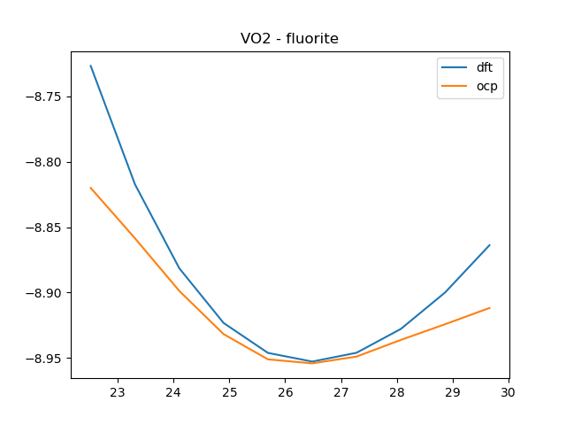

TODO: remove this, and make sure this works on main.
%%bash
[ ! -d "ocp" ] && git clone https://github.com/emsunshine/ocp.git
cd ocp
git pull
git checkout ase_datasets_bugfixes
pip install -e .
git rev-parse HEAD
Already up to date.
Already on 'ase_datasets_bugfixes'
Your branch is up to date with 'origin/ase_datasets_bugfixes'.
Obtaining file:///home/jovyan/shared-scratch/jkitchin/tutorial/ocp-tutorial/fine-tuning/ocp
Installing build dependencies: started
Installing build dependencies: finished with status 'done'
Checking if build backend supports build_editable: started
Checking if build backend supports build_editable: finished with status 'done'
Getting requirements to build editable: started
Getting requirements to build editable: finished with status 'done'
Preparing editable metadata (pyproject.toml): started
Preparing editable metadata (pyproject.toml): finished with status 'done'
Building wheels for collected packages: ocp-models
Building editable for ocp-models (pyproject.toml): started
Building editable for ocp-models (pyproject.toml): finished with status 'done'
Created wheel for ocp-models: filename=ocp_models-0.0.3-0.editable-py3-none-any.whl size=3335 sha256=2b174b987c69455812c022b732e3165125be62a727e5f909550933aa21e90246
Stored in directory: /tmp/pip-ephem-wheel-cache-d3pkb156/wheels/10/4b/3b/4e0bb17f5f6f297ada608943d3b4dbc2406c2ce5b7f15f99f5
Successfully built ocp-models
Installing collected packages: ocp-models
Attempting uninstall: ocp-models
Found existing installation: ocp-models 0.0.3
Uninstalling ocp-models-0.0.3:
Successfully uninstalled ocp-models-0.0.3
Successfully installed ocp-models-0.0.3
999c1ac8d1863c2fb666b1b22a59e3fc29725b52
Fine tuning a model#
In this section we look at how to improve a model. We start by using a pre-trained model to predict the energies of several oxide polymorphs. The data here comes from this paper:
Identifying Potential BO2 Oxide Polymorphs for Epitaxial Growth Candidates Mehta, P., Salvador, P. A., & Kitchin, J. R. (2015). Identifying potential BO2 oxide polymorphs for epitaxial growth candidates. ACS Appl. Mater. Interfaces, 6(5), 3630–3639. http://dx.doi.org/10.1021/am4059149
This data set shows equations of state for several oxide/polymorph combinations. I use this dataset to compare with predictions from OCP
First we get the checkpoint that we want. According to the MODELS the GemNet-OC OC20+OC22 combination has an energy MAE of 0.483 which seems like a good place to start. This model was trained on oxides.
We get this checkpoint here.
import os
import requests
checkpoint = 'gnoc_oc22_oc20_all_s2ef.pt'
if not os.path.exists(checkpoint):
url = 'https://dl.fbaipublicfiles.com/opencatalystproject/models/2022_09/oc22/s2ef/gnoc_oc22_oc20_all_s2ef.pt'
with open(checkpoint, 'wb') as f:
f.write(requests.get(url).content)
The data we need is provided in supporting-information.json. That file is embedded in the supporting information for the article, and is provided here in the tutorial. We load this data and explore it a little. The json file provides a dictionary with the structure:
[oxide][polymorph][xc][EOS][configurations]
The first key is a composition, the second is a string for the polymorph structure, the third indicates which XC functional was used (we focus on PBE here), the fourth key is for the Equation of State calculations, and the last key is a list of results for the EOS.
import json
import numpy as np
import matplotlib.pyplot as plt
from ase import Atoms
with open('supporting-information.json', 'rb') as f:
d = json.loads(f.read())
oxides = list(d.keys())
polymorphs = list(d['TiO2'].keys())
oxides, polymorphs
(['SnO2', 'IrO2', 'RuO2', 'TiO2', 'VO2'],
['rutile', 'pyrite', 'columbite', 'brookite', 'fluorite', 'anatase'])
A specific calculation has a lot of details in it. You can use this to recreate the calculations. Shortly we will use these to compare the DFT results to OCP.
d['TiO2']['rutile']['PBE']['EOS']['calculations'][0]
{'incar': {'doc': 'INCAR parameters',
'prec': 'Normal',
'isif': 4,
'nbands': 20,
'ibrion': 2,
'gga': 'PE',
'encut': 520.0,
'ismear': 0,
'sigma': 0.001,
'nsw': 50},
'doc': 'JSON representation of a VASP calculation.\n\nenergy is in eV\nforces are in eV/\\AA\nstress is in GPa (sxx, syy, szz, syz, sxz, sxy)\nmagnetic moments are in Bohr-magneton\nThe density of states is reported with E_f at 0 eV.\nVolume is reported in \\AA^3\nCoordinates and cell parameters are reported in \\AA\n\nIf atom-projected dos are included they are in the form:\n{ados:{energy:data, {atom index: {orbital : dos}}}\n',
'potcar': [['O',
'potpaw/O/POTCAR',
'0cf2ce56049ca395c567026b700ed66c94a85161'],
['Ti', 'potpaw/Ti/POTCAR', '51f7f05982d6b4052becc160375a8b8b670177a7']],
'input': {'kpts': [6, 6, 6],
'reciprocal': False,
'xc': 'LDA',
'kpts_nintersections': None,
'setups': None,
'txt': '-',
'gamma': False},
'atoms': {'cell': [[4.3789762519649225, 0.0, 0.0],
[0.0, 4.3789762519649225, 0.0],
[0.0, 0.0, 2.864091775985314]],
'symbols': ['Ti', 'Ti', 'O', 'O', 'O', 'O'],
'tags': [0, 0, 0, 0, 0, 0],
'pbc': [True, True, True],
'positions': [[0.0, 0.0, 0.0],
[2.1894881259824612, 2.1894881259824612, 1.432045887992657],
[1.3181554154438013, 1.3181554154438013, 0.0],
[3.0608208365211214, 3.0608208365211214, 0.0],
[3.5076435414262623, 0.87133271053866, 1.432045887992657],
[0.87133271053866, 3.5076435414262623, 1.432045887992657]]},
'data': {'stress': [496.18519999, 496.18519999, 502.82679392, 0.0, 0.0, 0.0],
'doc': 'Data from the output of the calculation',
'volume': 54.92019999999996,
'total_energy': -56.230672,
'forces': [[0.0, 0.0, 0.0],
[0.0, 0.0, 0.0],
[-0.001264, -0.001264, 0.0],
[0.001264, 0.001264, 0.0],
[-0.001264, 0.001264, 0.0],
[0.001264, -0.001264, 0.0]],
'fermi_level': 3.153}}
For each result we can retrieve the atomic geometry, energy and forces from the json file. We use these to recreate an Atoms object. Here is an example.
c = d['TiO2']['rutile']['PBE']['EOS']['calculations'][0]
atoms = Atoms(symbols=c['atoms']['symbols'],
positions=c['atoms']['positions'],
cell=c['atoms']['cell'],
pbc=c['atoms']['pbc'])
atoms.set_tags(np.ones(len(atoms)))
atoms, c['data']['total_energy'], c['data']['forces']
(Atoms(symbols='Ti2O4', pbc=True, cell=[4.3789762519649225, 4.3789762519649225, 2.864091775985314], tags=...),
-56.230672,
[[0.0, 0.0, 0.0],
[0.0, 0.0, 0.0],
[-0.001264, -0.001264, 0.0],
[0.001264, 0.001264, 0.0],
[-0.001264, 0.001264, 0.0],
[0.001264, -0.001264, 0.0]])
Next, we will create an OCP calculator that we can use to get predictions from.
from ocpmodels.common.relaxation.ase_utils import OCPCalculator
calc = OCPCalculator(checkpoint=os.path.expanduser(checkpoint), trainer='forces', cpu=False)
WARNING:root:Unrecognized arguments: ['symmetric_edge_symmetrization']
amp: false
cmd:
checkpoint_dir: /home/jovyan/shared-scratch/jkitchin/tutorial/ocp-tutorial/fine-tuning/checkpoints/2023-07-19-16-51-12
commit: 999c1ac
identifier: ''
logs_dir: /home/jovyan/shared-scratch/jkitchin/tutorial/ocp-tutorial/fine-tuning/logs/tensorboard/2023-07-19-16-51-12
print_every: 100
results_dir: /home/jovyan/shared-scratch/jkitchin/tutorial/ocp-tutorial/fine-tuning/results/2023-07-19-16-51-12
seed: null
timestamp_id: 2023-07-19-16-51-12
dataset: null
gpus: 1
logger: tensorboard
model: gemnet_oc
model_attributes:
activation: silu
atom_edge_interaction: true
atom_interaction: true
cbf:
name: spherical_harmonics
cutoff: 12.0
cutoff_aeaint: 12.0
cutoff_aint: 12.0
cutoff_qint: 12.0
direct_forces: true
edge_atom_interaction: true
emb_size_aint_in: 64
emb_size_aint_out: 64
emb_size_atom: 256
emb_size_cbf: 16
emb_size_edge: 512
emb_size_quad_in: 32
emb_size_quad_out: 32
emb_size_rbf: 16
emb_size_sbf: 32
emb_size_trip_in: 64
emb_size_trip_out: 64
envelope:
exponent: 5
name: polynomial
extensive: true
forces_coupled: false
max_neighbors: 30
max_neighbors_aeaint: 20
max_neighbors_aint: 1000
max_neighbors_qint: 8
num_after_skip: 2
num_atom: 3
num_atom_emb_layers: 2
num_before_skip: 2
num_blocks: 4
num_concat: 1
num_global_out_layers: 2
num_output_afteratom: 3
num_radial: 128
num_spherical: 7
otf_graph: true
output_init: HeOrthogonal
qint_tags:
- 1
- 2
quad_interaction: true
rbf:
name: gaussian
regress_forces: true
sbf:
name: legendre_outer
symmetric_edge_symmetrization: false
noddp: false
optim:
batch_size: 16
clip_grad_norm: 10
ema_decay: 0.999
energy_coefficient: 1
eval_batch_size: 16
eval_every: 5000
factor: 0.8
force_coefficient: 1
load_balancing: atoms
loss_energy: mae
loss_force: atomwisel2
lr_initial: 0.0005
max_epochs: 80
mode: min
num_workers: 2
optimizer: AdamW
optimizer_params:
amsgrad: true
patience: 3
scheduler: ReduceLROnPlateau
weight_decay: 0
slurm:
additional_parameters:
constraint: volta32gb
cpus_per_task: 3
folder: /checkpoint/abhshkdz/ocp_oct1_logs/57632342
gpus_per_node: 8
job_id: '57632342'
job_name: gnoc_oc22_oc20_all_s2ef
mem: 480GB
nodes: 8
ntasks_per_node: 8
partition: ocp,learnaccel
time: 4320
task:
dataset: oc22_lmdb
description: Regressing to energies and forces for DFT trajectories from OCP
eval_on_free_atoms: true
grad_input: atomic forces
labels:
- potential energy
metric: mae
primary_metric: forces_mae
train_on_free_atoms: true
type: regression
trainer: forces
Now, we loop through each structure and accumulate the OCP predictions. Then, we plot the parity results.
import time
t0 = time.time()
eos_data = {}
for oxide in oxides:
eos_data[oxide] = {}
for polymorph in polymorphs:
dft = []
ocp = []
vols = []
calculations = d[oxide][polymorph]['PBE']['EOS']['calculations']
for c in calculations:
atoms = Atoms(symbols=c['atoms']['symbols'],
positions=c['atoms']['positions'],
cell=c['atoms']['cell'],
pbc=c['atoms']['pbc'])
atoms.set_tags(np.ones(len(atoms)))
atoms.calc = calc
ocp += [atoms.get_potential_energy() / len(atoms)]
dft += [c['data']['total_energy'] / len(atoms)]
vols += [atoms.get_volume()]
plt.plot(dft, ocp, marker='s' if oxide == 'VO2' else '.',
alpha=0.5, label=f'{oxide}-{polymorph}')
eos_data[oxide][polymorph] = (vols, dft, ocp)
plt.xlabel('DFT (eV/atom)')
plt.ylabel('OCP (eV/atom)')
plt.legend(loc='center left', bbox_to_anchor=(1, 0.5), ncol=3);
print(f'Elapsed time {time.time() - t0:1.1f} seconds.')
Elapsed time 16.7 seconds.
mae = np.mean(np.abs(np.array(dft) - np.array(ocp)))
print(f'MAE = {mae:1.3f} eV/atom')
MAE = 1.668 eV/atom
The MAE is somewhat high compared to the reported value of 0.458 eV. That is not too surprising; although OC22 was trained on oxides, it was not trained on all of these structures. It is also evident on inspection that the main issues are all the VO2 structures, and these skew the MAE. Next we look at the EOS for each material. Here you can see offsets, and qualitative issues in the shapes. The offset is largely a PBE/RPBE difference.
Some notable issues are with fluorite structures
os.makedirs('pretrained-eos', exist_ok=True)
for oxide in eos_data:
for polymorph in eos_data[oxide]:
V, D, O = eos_data[oxide][polymorph]
plt.figure()
plt.plot(V, D, label='dft')
plt.plot(V, O, label='ocp')
plt.title(f'pretrained {oxide} - {polymorph}')
plt.legend()
plt.savefig(f'pretrained-eos/pretrained-{oxide}-{polymorph}.png')
plt.close()
Here is one example from pretrained-eos.

We can improve this by fine-tuning the model.
Fine tuning the checkpoint#
There are severeal steps in fine-tuning:
Create train, test, val datasets
Create a configuration yml file
Run the training
Check the results
First we create the training databases. OCP supports ase databases, so we use those here. The first step is to make a database containing the data. We need to write an atoms object with an attached SinglePointCalculator for each structure.
from ase.db import connect
from ase.calculators.singlepoint import SinglePointCalculator
! rm -fr oxides.db # start clean when you run this cell
db = connect('oxides.db')
for oxide in oxides:
for polymorph in polymorphs:
for c in d[oxide][polymorph]['PBE']['EOS']['calculations']:
atoms = Atoms(symbols=c['atoms']['symbols'],
positions=c['atoms']['positions'],
cell=c['atoms']['cell'],
pbc=c['atoms']['pbc'])
atoms.set_tags(np.ones(len(atoms)))
calc = SinglePointCalculator(atoms,
energy=c['data']['total_energy'],
forces=c['data']['forces'])
atoms.set_calculator(calc)
db.write(atoms)
Let’s see what we made.
! ase db oxides.db
id|age|formula|calculator| energy|natoms| fmax|pbc| volume|charge| mass
1| 3s|Sn2O4 |unknown |-41.359| 6|0.045|TTT| 64.258| 0.000|301.416
2| 3s|Sn2O4 |unknown |-41.853| 6|0.025|TTT| 66.526| 0.000|301.416
3| 3s|Sn2O4 |unknown |-42.199| 6|0.010|TTT| 68.794| 0.000|301.416
4| 3s|Sn2O4 |unknown |-42.419| 6|0.006|TTT| 71.062| 0.000|301.416
5| 3s|Sn2O4 |unknown |-42.534| 6|0.011|TTT| 73.330| 0.000|301.416
6| 3s|Sn2O4 |unknown |-42.562| 6|0.029|TTT| 75.598| 0.000|301.416
7| 3s|Sn2O4 |unknown |-42.518| 6|0.033|TTT| 77.866| 0.000|301.416
8| 3s|Sn2O4 |unknown |-42.415| 6|0.010|TTT| 80.134| 0.000|301.416
9| 3s|Sn2O4 |unknown |-42.266| 6|0.006|TTT| 82.402| 0.000|301.416
10| 3s|Sn2O4 |unknown |-42.083| 6|0.017|TTT| 84.670| 0.000|301.416
11| 3s|Sn4O8 |unknown |-81.424| 12|0.012|TTT|117.473| 0.000|602.832
12| 3s|Sn4O8 |unknown |-82.437| 12|0.005|TTT|121.620| 0.000|602.832
13| 3s|Sn4O8 |unknown |-83.147| 12|0.015|TTT|125.766| 0.000|602.832
14| 3s|Sn4O8 |unknown |-83.599| 12|0.047|TTT|129.912| 0.000|602.832
15| 3s|Sn4O8 |unknown |-83.831| 12|0.081|TTT|134.058| 0.000|602.832
16| 3s|Sn4O8 |unknown |-83.898| 12|0.001|TTT|138.204| 0.000|602.832
17| 3s|Sn4O8 |unknown |-83.805| 12|0.001|TTT|142.350| 0.000|602.832
18| 3s|Sn4O8 |unknown |-83.586| 12|0.002|TTT|146.496| 0.000|602.832
19| 3s|Sn4O8 |unknown |-83.262| 12|0.002|TTT|150.642| 0.000|602.832
20| 3s|Sn4O8 |unknown |-82.851| 12|0.013|TTT|154.788| 0.000|602.832
Rows: 295 (showing first 20)
Make the train, test, val splits#
We need to split the ase-db into three separate databases, one for training (80%), one for testing (10%) and one for validation. We generate a list of ids and then shuffle them. Then we write the first 80% into train.db, the next 10% into test.db, and the remaining into val.db.
The train set is used for training. The test and val sets are used to check for overfitting.
You choose the splits you want, 80:10:10 is common. We take a simple approach to split the database here. We make an array of integers that correspond to the ids, randomly shuffle them, and then get each row in the randomized order and write them to a new db.
We provide some helper functions in ../ocp-tutorial.ipynb to streamline this process. The next cell loads them.
%run ../ocp-tutorial.ipynb # load some helper functions
! rm -fr train.db test.db val.db
train, test, val = train_test_val_split('oxides.db')
train, test, val
(PosixPath('/home/jovyan/shared-scratch/jkitchin/tutorial/ocp-tutorial/fine-tuning/train.db'),
PosixPath('/home/jovyan/shared-scratch/jkitchin/tutorial/ocp-tutorial/fine-tuning/test.db'),
PosixPath('/home/jovyan/shared-scratch/jkitchin/tutorial/ocp-tutorial/fine-tuning/val.db'))
Setting up the configuration yaml file#
We have to create a yaml configuration file for the model we are using. The pre-trained checkpoints contain their config data, so we use this to get the base configuration, and then remove pieces we don’t need, and update pieces we do need.
import ocpmodels as om
ocp_root = Path(om.__file__).parent.parent
%run ../ocp-tutorial.ipynb # load some helper functions
yml = generate_yml_config(checkpoint, 'config.yml',
delete=['amp', 'slurm', 'cmd', 'logger', 'task', 'model_attributes',
'optim.loss_force', # the checkpoint setting causes an error
'dataset', 'test_dataset', 'val_dataset'],
update={'gpus': 1,
'task.dataset': 'ase_db',
'optim.eval_every': 1,
'optim.max_epochs': 80,
# Train data
'dataset.train.src': str(Path('train.db').absolute()),
'dataset.train.a2g_args.r_energy': True,
'dataset.train.a2g_args.r_forces': True,
'dataset.train.keep_in_memory': True,
# Test data - prediction only so no regression
'dataset.test.src': str(Path('test.db').absolute()),
'dataset.test.a2g_args.r_energy': False,
'dataset.test.a2g_args.r_forces': False,
'dataset.test.keep_in_memory': True,
# val data
'dataset.val.src': str(Path('val.db').absolute()),
'dataset.val.a2g_args.r_energy': True,
'dataset.val.a2g_args.r_forces': True,
'dataset.val.keep_in_memory': True
})
yml
WARNING:root:Unable to identify OCP trainer, defaulting to `forces`. Specify the `trainer` argument into OCPCalculator if otherwise.
WARNING:root:Unrecognized arguments: ['symmetric_edge_symmetrization']
PosixPath('/home/jovyan/shared-scratch/jkitchin/tutorial/ocp-tutorial/fine-tuning/config.yml')
! cat config.yml
checkpoint: gnoc_oc22_oc20_all_s2ef.pt
dataset:
test:
a2g_args:
r_energy: false
r_forces: false
keep_in_memory: true
src: /home/jovyan/shared-scratch/jkitchin/tutorial/ocp-tutorial/fine-tuning/test.db
train:
a2g_args:
r_energy: true
r_forces: true
keep_in_memory: true
src: /home/jovyan/shared-scratch/jkitchin/tutorial/ocp-tutorial/fine-tuning/train.db
val:
a2g_args:
r_energy: true
r_forces: true
keep_in_memory: true
src: /home/jovyan/shared-scratch/jkitchin/tutorial/ocp-tutorial/fine-tuning/val.db
gpus: 1
model:
activation: silu
atom_edge_interaction: true
atom_interaction: true
cbf:
name: spherical_harmonics
cutoff: 12.0
cutoff_aeaint: 12.0
cutoff_aint: 12.0
cutoff_qint: 12.0
direct_forces: true
edge_atom_interaction: true
emb_size_aint_in: 64
emb_size_aint_out: 64
emb_size_atom: 256
emb_size_cbf: 16
emb_size_edge: 512
emb_size_quad_in: 32
emb_size_quad_out: 32
emb_size_rbf: 16
emb_size_sbf: 32
emb_size_trip_in: 64
emb_size_trip_out: 64
envelope:
exponent: 5
name: polynomial
extensive: true
forces_coupled: false
max_neighbors: 30
max_neighbors_aeaint: 20
max_neighbors_aint: 1000
max_neighbors_qint: 8
name: gemnet_oc
num_after_skip: 2
num_atom: 3
num_atom_emb_layers: 2
num_before_skip: 2
num_blocks: 4
num_concat: 1
num_global_out_layers: 2
num_output_afteratom: 3
num_radial: 128
num_spherical: 7
otf_graph: true
output_init: HeOrthogonal
qint_tags:
- 1
- 2
quad_interaction: true
rbf:
name: gaussian
regress_forces: true
sbf:
name: legendre_outer
symmetric_edge_symmetrization: false
noddp: false
optim:
batch_size: 16
clip_grad_norm: 10
ema_decay: 0.999
energy_coefficient: 1
eval_batch_size: 16
eval_every: 1
factor: 0.8
force_coefficient: 1
load_balancing: atoms
loss_energy: mae
lr_initial: 0.0005
max_epochs: 80
mode: min
num_workers: 2
optimizer: AdamW
optimizer_params:
amsgrad: true
patience: 3
scheduler: ReduceLROnPlateau
weight_decay: 0
task:
dataset: ase_db
trainer: forces
Running the training job#
ocp provides a main.py file that is used for training. You have to run this file from the ocp root directory. The following cells show how to get the arguments you need to build up the command to run.
You need absolute paths to your run.yml file, and to the checkpoint file.
Here we construct the Python command you need to run. You need to run this cell, then copy the results into the next cell with a bash cell-magic.
cmd = f'''python {ocp_root}/main.py --mode train \\
--config-yml {yml} \\
--checkpoint {Path(checkpoint).absolute()}'''
print(cmd)
python /home/jovyan/shared-scratch/jkitchin/tutorial/ocp-tutorial/fine-tuning/ocp/main.py --mode train \
--config-yml /home/jovyan/shared-scratch/jkitchin/tutorial/ocp-tutorial/fine-tuning/config.yml \
--checkpoint /home/jovyan/shared-scratch/jkitchin/tutorial/ocp-tutorial/fine-tuning/gnoc_oc22_oc20_all_s2ef.pt
%%bash
python /home/jovyan/shared-scratch/jkitchin/tutorial/ocp-tutorial/fine-tuning/ocp/main.py --mode train \
--config-yml /home/jovyan/shared-scratch/jkitchin/tutorial/ocp-tutorial/fine-tuning/run.yml \
--checkpoint /home/jovyan/shared-scratch/jkitchin/tutorial/ocp-tutorial/fine-tuning/gnoc_oc22_oc20_all_s2ef.pt
2023-07-19 15:29:59 (INFO): Project root: /home/jovyan/shared-scratch/jkitchin/tutorial/ocp-tutorial/fine-tuning/ocp
amp: false
cmd:
checkpoint_dir: ./checkpoints/2023-07-19-15-30-08
commit: 999c1ac
identifier: ''
logs_dir: ./logs/tensorboard/2023-07-19-15-30-08
print_every: 10
results_dir: ./results/2023-07-19-15-30-08
seed: 0
timestamp_id: 2023-07-19-15-30-08
dataset:
a2g_args:
r_energy: true
r_forces: true
keep_in_memory: true
src: /home/jovyan/shared-scratch/jkitchin/tutorial/ocp-tutorial/fine-tuning/train.db
gpus: 1
logger: tensorboard
model: gemnet_oc
model_attributes:
activation: silu
atom_edge_interaction: true
atom_interaction: true
cbf:
name: spherical_harmonics
cutoff: 12.0
cutoff_aeaint: 12.0
cutoff_aint: 12.0
cutoff_qint: 12.0
direct_forces: true
edge_atom_interaction: true
emb_size_aint_in: 64
emb_size_aint_out: 64
emb_size_atom: 256
emb_size_cbf: 16
emb_size_edge: 512
emb_size_quad_in: 32
emb_size_quad_out: 32
emb_size_rbf: 16
emb_size_sbf: 32
emb_size_trip_in: 64
emb_size_trip_out: 64
envelope:
exponent: 5
name: polynomial
extensive: true
forces_coupled: false
max_neighbors: 30
max_neighbors_aeaint: 20
max_neighbors_aint: 1000
max_neighbors_qint: 8
num_after_skip: 2
num_atom: 3
num_atom_emb_layers: 2
num_before_skip: 2
num_blocks: 4
num_concat: 1
num_global_out_layers: 2
num_output_afteratom: 3
num_radial: 128
num_spherical: 7
otf_graph: true
output_init: HeOrthogonal
qint_tags:
- 1
- 2
quad_interaction: true
rbf:
name: gaussian
regress_forces: true
sbf:
name: legendre_outer
noddp: false
optim:
batch_size: 16
clip_grad_norm: 10
ema_decay: 0.999
energy_coefficient: 1
eval_batch_size: 16
factor: 0.8
force_coefficient: 1
load_balancing: atoms
loss_energy: mae
lr_initial: 0.0005
max_epochs: 80
mode: min
num_workers: 2
optimizer: AdamW
optimizer_params:
amsgrad: true
patience: 3
scheduler: ReduceLROnPlateau
weight_decay: 0
slurm: {}
task:
dataset: ase_db
test_dataset:
a2g_args:
r_energy: false
r_forces: false
keep_in_memory: true
src: /home/jovyan/shared-scratch/jkitchin/tutorial/ocp-tutorial/fine-tuning/test.db
trainer: forces
val_dataset:
a2g_args:
r_energy: true
r_forces: true
keep_in_memory: true
src: /home/jovyan/shared-scratch/jkitchin/tutorial/ocp-tutorial/fine-tuning/val.db
2023-07-19 15:30:04 (INFO): Batch balancing is disabled for single GPU training.
2023-07-19 15:30:04 (INFO): Batch balancing is disabled for single GPU training.
2023-07-19 15:30:04 (INFO): Batch balancing is disabled for single GPU training.
2023-07-19 15:30:04 (INFO): Loading dataset: ase_db
2023-07-19 15:30:04 (INFO): Loading model: gemnet_oc
2023-07-19 15:30:07 (INFO): Loaded GemNetOC with 38864438 parameters.
2023-07-19 15:30:07 (WARNING): Model gradient logging to tensorboard not yet supported.
2023-07-19 15:30:07 (INFO): Loading checkpoint from: /home/jovyan/shared-scratch/jkitchin/tutorial/ocp-tutorial/fine-tuning/gnoc_oc22_oc20_all_s2ef.pt
2023-07-19 15:30:07 (INFO): Overwriting scaling factors with those loaded from checkpoint. If you're generating predictions with a pretrained checkpoint, this is the correct behavior. To disable this, delete `scale_dict` from the checkpoint.
2023-07-19 15:30:12 (INFO): forcesx_mae: 3.47e-02, forcesy_mae: 3.03e-02, forcesz_mae: 3.96e-02, forces_mae: 3.49e-02, forces_cos: 9.60e-02, forces_magnitude: 5.62e-02, energy_mae: 6.99e+00, energy_force_within_threshold: 6.25e-03, loss: 7.08e+00, lr: 5.00e-04, epoch: 6.67e-01, step: 1.00e+01
2023-07-19 15:30:14 (INFO): Evaluating on val.
device 0: 0%| | 0/2 [00:00<?, ?it/s]
device 0: 50%|█████ | 1/2 [00:00<00:00, 3.46it/s]
device 0: 100%|██████████| 2/2 [00:00<00:00, 4.36it/s]
2023-07-19 15:30:15 (INFO): forcesx_mae: 0.0229, forcesy_mae: 0.0230, forcesz_mae: 0.0289, forces_mae: 0.0249, forces_cos: -0.0435, forces_magnitude: 0.0369, energy_mae: 2.6528, energy_force_within_threshold: 0.0000, loss: 2.7464, epoch: 1.0000
2023-07-19 15:30:15 (INFO): Predicting on test.
device 0: 100%|██████████| 2/2 [00:00<00:00, 6.08it/s]
/home/jovyan/shared-scratch/jkitchin/tutorial/ocp-tutorial/fine-tuning/ocp/ocpmodels/trainers/forces_trainer.py:263: VisibleDeprecationWarning: Creating an ndarray from ragged nested sequences (which is a list-or-tuple of lists-or-tuples-or ndarrays with different lengths or shapes) is deprecated. If you meant to do this, you must specify 'dtype=object' when creating the ndarray.
predictions["forces"] = np.array(predictions["forces"])
/home/jovyan/shared-scratch/jkitchin/tutorial/ocp-tutorial/fine-tuning/ocp/ocpmodels/trainers/base_trainer.py:794: VisibleDeprecationWarning: Creating an ndarray from ragged nested sequences (which is a list-or-tuple of lists-or-tuples-or ndarrays with different lengths or shapes) is deprecated. If you meant to do this, you must specify 'dtype=object' when creating the ndarray.
np.array(gather_results[k])[idx]
2023-07-19 15:30:15 (INFO): Writing results to ./results/2023-07-19-15-30-08/s2ef_predictions.npz
2023-07-19 15:30:17 (INFO): forcesx_mae: 2.05e-02, forcesy_mae: 2.08e-02, forcesz_mae: 2.20e-02, forces_mae: 2.11e-02, forces_cos: -3.21e-03, forces_magnitude: 2.85e-02, energy_mae: 2.37e+00, energy_force_within_threshold: 6.41e-03, loss: 2.41e+00, lr: 5.00e-04, epoch: 1.33e+00, step: 2.00e+01
2023-07-19 15:30:19 (INFO): forcesx_mae: 2.05e-02, forcesy_mae: 1.81e-02, forcesz_mae: 1.63e-02, forces_mae: 1.83e-02, forces_cos: 1.38e-02, forces_magnitude: 2.19e-02, energy_mae: 2.86e+00, energy_force_within_threshold: 6.41e-03, loss: 2.87e+00, lr: 5.00e-04, epoch: 2.00e+00, step: 3.00e+01
2023-07-19 15:30:19 (INFO): Evaluating on val.
device 0: 0%| | 0/2 [00:00<?, ?it/s]
device 0: 50%|█████ | 1/2 [00:00<00:00, 4.95it/s]
device 0: 100%|██████████| 2/2 [00:00<00:00, 5.34it/s]
2023-07-19 15:30:20 (INFO): forcesx_mae: 0.0126, forcesy_mae: 0.0150, forcesz_mae: 0.0101, forces_mae: 0.0126, forces_cos: 0.0805, forces_magnitude: 0.0157, energy_mae: 0.7724, energy_force_within_threshold: 0.0000, loss: 0.8204, epoch: 2.0000
2023-07-19 15:30:23 (INFO): forcesx_mae: 1.47e-02, forcesy_mae: 1.21e-02, forcesz_mae: 1.39e-02, forces_mae: 1.36e-02, forces_cos: -4.35e-02, forces_magnitude: 1.29e-02, energy_mae: 2.74e+00, energy_force_within_threshold: 1.25e-02, loss: 2.78e+00, lr: 5.00e-04, epoch: 2.67e+00, step: 4.00e+01
2023-07-19 15:30:24 (INFO): Evaluating on val.
device 0: 0%| | 0/2 [00:00<?, ?it/s]
device 0: 50%|█████ | 1/2 [00:00<00:00, 5.30it/s]
device 0: 100%|██████████| 2/2 [00:00<00:00, 5.54it/s]
2023-07-19 15:30:25 (INFO): forcesx_mae: 0.0252, forcesy_mae: 0.0366, forcesz_mae: 0.0305, forces_mae: 0.0308, forces_cos: -0.0271, forces_magnitude: 0.0484, energy_mae: 1.3287, energy_force_within_threshold: 0.0000, loss: 1.4122, epoch: 3.0000
2023-07-19 15:30:26 (INFO): forcesx_mae: 2.09e-02, forcesy_mae: 2.02e-02, forcesz_mae: 2.06e-02, forces_mae: 2.05e-02, forces_cos: 3.61e-02, forces_magnitude: 2.69e-02, energy_mae: 1.66e+00, energy_force_within_threshold: 1.28e-02, loss: 1.73e+00, lr: 5.00e-04, epoch: 3.33e+00, step: 5.00e+01
2023-07-19 15:30:28 (INFO): forcesx_mae: 3.59e-02, forcesy_mae: 2.79e-02, forcesz_mae: 3.15e-02, forces_mae: 3.18e-02, forces_cos: -1.07e-02, forces_magnitude: 4.83e-02, energy_mae: 2.16e+00, energy_force_within_threshold: 0.00e+00, loss: 2.25e+00, lr: 5.00e-04, epoch: 4.00e+00, step: 6.00e+01
2023-07-19 15:30:29 (INFO): Evaluating on val.
device 0: 0%| | 0/2 [00:00<?, ?it/s]
device 0: 50%|█████ | 1/2 [00:00<00:00, 5.45it/s]
device 0: 100%|██████████| 2/2 [00:00<00:00, 5.63it/s]
2023-07-19 15:30:29 (INFO): forcesx_mae: 0.0246, forcesy_mae: 0.0311, forcesz_mae: 0.0300, forces_mae: 0.0286, forces_cos: -0.0223, forces_magnitude: 0.0403, energy_mae: 1.3505, energy_force_within_threshold: 0.0000, loss: 1.4443, epoch: 4.0000
2023-07-19 15:30:32 (INFO): forcesx_mae: 2.62e-02, forcesy_mae: 2.26e-02, forcesz_mae: 2.47e-02, forces_mae: 2.45e-02, forces_cos: 3.12e-02, forces_magnitude: 3.42e-02, energy_mae: 1.26e+00, energy_force_within_threshold: 6.25e-03, loss: 1.34e+00, lr: 5.00e-04, epoch: 4.67e+00, step: 7.00e+01
2023-07-19 15:30:34 (INFO): Evaluating on val.
device 0: 0%| | 0/2 [00:00<?, ?it/s]
device 0: 50%|█████ | 1/2 [00:00<00:00, 5.39it/s]
device 0: 100%|██████████| 2/2 [00:00<00:00, 5.63it/s]
2023-07-19 15:30:34 (INFO): forcesx_mae: 0.0185, forcesy_mae: 0.0210, forcesz_mae: 0.0136, forces_mae: 0.0177, forces_cos: -0.1109, forces_magnitude: 0.0212, energy_mae: 2.2451, energy_force_within_threshold: 0.0333, loss: 2.2666, epoch: 5.0000
2023-07-19 15:30:34 (INFO): Predicting on test.
device 0: 0%| | 0/2 [00:00<?, ?it/s]
device 0: 50%|█████ | 1/2 [00:00<00:00, 6.42it/s]
device 0: 100%|██████████| 2/2 [00:00<00:00, 6.08it/s]
2023-07-19 15:30:35 (INFO): Writing results to ./results/2023-07-19-15-30-08/s2ef_predictions.npz
2023-07-19 15:30:36 (INFO): forcesx_mae: 2.54e-02, forcesy_mae: 2.11e-02, forcesz_mae: 2.45e-02, forces_mae: 2.37e-02, forces_cos: 2.28e-02, forces_magnitude: 3.22e-02, energy_mae: 1.82e+00, energy_force_within_threshold: 6.41e-03, loss: 1.88e+00, lr: 4.00e-04, epoch: 5.33e+00, step: 8.00e+01
2023-07-19 15:30:38 (INFO): forcesx_mae: 1.29e-02, forcesy_mae: 1.20e-02, forcesz_mae: 1.23e-02, forces_mae: 1.24e-02, forces_cos: 2.98e-02, forces_magnitude: 1.28e-02, energy_mae: 1.20e+00, energy_force_within_threshold: 1.28e-02, loss: 1.25e+00, lr: 4.00e-04, epoch: 6.00e+00, step: 9.00e+01
2023-07-19 15:30:39 (INFO): Evaluating on val.
device 0: 0%| | 0/2 [00:00<?, ?it/s]
device 0: 50%|█████ | 1/2 [00:00<00:00, 5.33it/s]
device 0: 100%|██████████| 2/2 [00:00<00:00, 5.54it/s]
2023-07-19 15:30:40 (INFO): forcesx_mae: 0.0095, forcesy_mae: 0.0124, forcesz_mae: 0.0094, forces_mae: 0.0104, forces_cos: -0.0148, forces_magnitude: 0.0137, energy_mae: 1.4849, energy_force_within_threshold: 0.0000, loss: 1.5143, epoch: 6.0000
2023-07-19 15:30:42 (INFO): forcesx_mae: 1.40e-02, forcesy_mae: 1.26e-02, forcesz_mae: 1.26e-02, forces_mae: 1.31e-02, forces_cos: 1.78e-02, forces_magnitude: 1.50e-02, energy_mae: 1.23e+00, energy_force_within_threshold: 1.25e-02, loss: 1.27e+00, lr: 4.00e-04, epoch: 6.67e+00, step: 1.00e+02
2023-07-19 15:30:44 (INFO): Evaluating on val.
device 0: 0%| | 0/2 [00:00<?, ?it/s]
device 0: 50%|█████ | 1/2 [00:00<00:00, 5.26it/s]
device 0: 100%|██████████| 2/2 [00:00<00:00, 5.50it/s]
2023-07-19 15:30:44 (INFO): forcesx_mae: 0.0137, forcesy_mae: 0.0165, forcesz_mae: 0.0127, forces_mae: 0.0143, forces_cos: 0.1021, forces_magnitude: 0.0166, energy_mae: 3.4860, energy_force_within_threshold: 0.0000, loss: 3.5219, epoch: 7.0000
2023-07-19 15:30:46 (INFO): forcesx_mae: 1.60e-02, forcesy_mae: 1.50e-02, forcesz_mae: 1.48e-02, forces_mae: 1.53e-02, forces_cos: 4.04e-02, forces_magnitude: 1.63e-02, energy_mae: 2.46e+00, energy_force_within_threshold: 1.28e-02, loss: 2.48e+00, lr: 4.00e-04, epoch: 7.33e+00, step: 1.10e+02
2023-07-19 15:30:48 (INFO): forcesx_mae: 1.59e-02, forcesy_mae: 1.37e-02, forcesz_mae: 1.55e-02, forces_mae: 1.50e-02, forces_cos: 4.81e-03, forces_magnitude: 1.70e-02, energy_mae: 1.26e+00, energy_force_within_threshold: 6.41e-03, loss: 1.30e+00, lr: 4.00e-04, epoch: 8.00e+00, step: 1.20e+02
2023-07-19 15:30:49 (INFO): Evaluating on val.
device 0: 0%| | 0/2 [00:00<?, ?it/s]
device 0: 50%|█████ | 1/2 [00:00<00:00, 4.32it/s]
device 0: 100%|██████████| 2/2 [00:00<00:00, 4.94it/s]
2023-07-19 15:30:49 (INFO): forcesx_mae: 0.0136, forcesy_mae: 0.0148, forcesz_mae: 0.0137, forces_mae: 0.0140, forces_cos: -0.0061, forces_magnitude: 0.0165, energy_mae: 1.0221, energy_force_within_threshold: 0.0333, loss: 1.0554, epoch: 8.0000
2023-07-19 15:30:52 (INFO): forcesx_mae: 9.89e-03, forcesy_mae: 8.49e-03, forcesz_mae: 1.00e-02, forces_mae: 9.46e-03, forces_cos: -1.44e-02, forces_magnitude: 1.09e-02, energy_mae: 1.02e+00, energy_force_within_threshold: 1.87e-02, loss: 1.05e+00, lr: 4.00e-04, epoch: 8.67e+00, step: 1.30e+02
2023-07-19 15:30:53 (INFO): Evaluating on val.
device 0: 0%| | 0/2 [00:00<?, ?it/s]
device 0: 50%|█████ | 1/2 [00:00<00:00, 5.35it/s]
device 0: 100%|██████████| 2/2 [00:00<00:00, 5.56it/s]
2023-07-19 15:30:54 (INFO): forcesx_mae: 0.0100, forcesy_mae: 0.0117, forcesz_mae: 0.0084, forces_mae: 0.0100, forces_cos: -0.0502, forces_magnitude: 0.0129, energy_mae: 0.9450, energy_force_within_threshold: 0.0000, loss: 0.9768, epoch: 9.0000
2023-07-19 15:30:55 (INFO): forcesx_mae: 1.21e-02, forcesy_mae: 1.11e-02, forcesz_mae: 1.05e-02, forces_mae: 1.12e-02, forces_cos: 5.61e-02, forces_magnitude: 1.33e-02, energy_mae: 1.31e+00, energy_force_within_threshold: 0.00e+00, loss: 1.33e+00, lr: 3.20e-04, epoch: 9.33e+00, step: 1.40e+02
2023-07-19 15:30:57 (INFO): forcesx_mae: 9.27e-03, forcesy_mae: 9.76e-03, forcesz_mae: 9.46e-03, forces_mae: 9.50e-03, forces_cos: 1.23e-01, forces_magnitude: 1.20e-02, energy_mae: 1.53e+00, energy_force_within_threshold: 1.28e-02, loss: 1.55e+00, lr: 3.20e-04, epoch: 1.00e+01, step: 1.50e+02
2023-07-19 15:30:58 (INFO): Evaluating on val.
device 0: 0%| | 0/2 [00:00<?, ?it/s]
device 0: 50%|█████ | 1/2 [00:00<00:00, 5.45it/s]
device 0: 100%|██████████| 2/2 [00:00<00:00, 5.61it/s]
2023-07-19 15:30:59 (INFO): forcesx_mae: 0.0086, forcesy_mae: 0.0107, forcesz_mae: 0.0081, forces_mae: 0.0091, forces_cos: 0.0169, forces_magnitude: 0.0152, energy_mae: 1.0433, energy_force_within_threshold: 0.0000, loss: 1.0605, epoch: 10.0000
2023-07-19 15:31:01 (INFO): forcesx_mae: 8.68e-03, forcesy_mae: 8.77e-03, forcesz_mae: 8.37e-03, forces_mae: 8.61e-03, forces_cos: 1.58e-01, forces_magnitude: 1.27e-02, energy_mae: 1.82e+00, energy_force_within_threshold: 0.00e+00, loss: 1.85e+00, lr: 3.20e-04, epoch: 1.07e+01, step: 1.60e+02
2023-07-19 15:31:03 (INFO): Evaluating on val.
device 0: 0%| | 0/2 [00:00<?, ?it/s]
device 0: 50%|█████ | 1/2 [00:00<00:00, 5.23it/s]
device 0: 100%|██████████| 2/2 [00:00<00:00, 5.49it/s]
2023-07-19 15:31:03 (INFO): forcesx_mae: 0.0106, forcesy_mae: 0.0130, forcesz_mae: 0.0095, forces_mae: 0.0110, forces_cos: -0.1532, forces_magnitude: 0.0131, energy_mae: 1.1614, energy_force_within_threshold: 0.0000, loss: 1.1905, epoch: 11.0000
2023-07-19 15:31:05 (INFO): forcesx_mae: 8.04e-03, forcesy_mae: 9.40e-03, forcesz_mae: 9.13e-03, forces_mae: 8.86e-03, forces_cos: 4.53e-02, forces_magnitude: 1.07e-02, energy_mae: 1.24e+00, energy_force_within_threshold: 1.28e-02, loss: 1.29e+00, lr: 3.20e-04, epoch: 1.13e+01, step: 1.70e+02
2023-07-19 15:31:07 (INFO): forcesx_mae: 1.13e-02, forcesy_mae: 1.08e-02, forcesz_mae: 1.06e-02, forces_mae: 1.09e-02, forces_cos: 6.37e-02, forces_magnitude: 1.28e-02, energy_mae: 1.64e+00, energy_force_within_threshold: 6.41e-03, loss: 1.67e+00, lr: 3.20e-04, epoch: 1.20e+01, step: 1.80e+02
2023-07-19 15:31:08 (INFO): Evaluating on val.
device 0: 0%| | 0/2 [00:00<?, ?it/s]
device 0: 50%|█████ | 1/2 [00:00<00:00, 5.28it/s]
device 0: 100%|██████████| 2/2 [00:00<00:00, 5.56it/s]
2023-07-19 15:31:08 (INFO): forcesx_mae: 0.0088, forcesy_mae: 0.0103, forcesz_mae: 0.0076, forces_mae: 0.0089, forces_cos: -0.0150, forces_magnitude: 0.0144, energy_mae: 0.9462, energy_force_within_threshold: 0.0333, loss: 0.9676, epoch: 12.0000
2023-07-19 15:31:11 (INFO): forcesx_mae: 8.84e-03, forcesy_mae: 8.82e-03, forcesz_mae: 8.28e-03, forces_mae: 8.65e-03, forces_cos: 1.66e-01, forces_magnitude: 1.23e-02, energy_mae: 7.90e-01, energy_force_within_threshold: 1.87e-02, loss: 8.16e-01, lr: 3.20e-04, epoch: 1.27e+01, step: 1.90e+02
2023-07-19 15:31:12 (INFO): Evaluating on val.
device 0: 0%| | 0/2 [00:00<?, ?it/s]
device 0: 50%|█████ | 1/2 [00:00<00:00, 5.35it/s]
device 0: 100%|██████████| 2/2 [00:00<00:00, 5.59it/s]
2023-07-19 15:31:13 (INFO): forcesx_mae: 0.0103, forcesy_mae: 0.0114, forcesz_mae: 0.0081, forces_mae: 0.0099, forces_cos: 0.1375, forces_magnitude: 0.0144, energy_mae: 1.4873, energy_force_within_threshold: 0.0333, loss: 1.5099, epoch: 13.0000
2023-07-19 15:31:14 (INFO): forcesx_mae: 7.52e-03, forcesy_mae: 8.69e-03, forcesz_mae: 8.78e-03, forces_mae: 8.33e-03, forces_cos: 1.91e-01, forces_magnitude: 1.21e-02, energy_mae: 7.43e-01, energy_force_within_threshold: 0.00e+00, loss: 7.67e-01, lr: 2.56e-04, epoch: 1.33e+01, step: 2.00e+02
2023-07-19 15:31:16 (INFO): forcesx_mae: 9.20e-03, forcesy_mae: 8.44e-03, forcesz_mae: 8.58e-03, forces_mae: 8.74e-03, forces_cos: 1.72e-01, forces_magnitude: 1.18e-02, energy_mae: 7.55e-01, energy_force_within_threshold: 1.92e-02, loss: 7.69e-01, lr: 2.56e-04, epoch: 1.40e+01, step: 2.10e+02
2023-07-19 15:31:17 (INFO): Evaluating on val.
device 0: 0%| | 0/2 [00:00<?, ?it/s]
device 0: 50%|█████ | 1/2 [00:00<00:00, 5.28it/s]
device 0: 100%|██████████| 2/2 [00:00<00:00, 5.55it/s]
2023-07-19 15:31:18 (INFO): forcesx_mae: 0.0095, forcesy_mae: 0.0116, forcesz_mae: 0.0087, forces_mae: 0.0099, forces_cos: -0.0107, forces_magnitude: 0.0133, energy_mae: 0.3759, energy_force_within_threshold: 0.0667, loss: 0.4098, epoch: 14.0000
2023-07-19 15:31:18 (INFO): Predicting on test.
device 0: 0%| | 0/2 [00:00<?, ?it/s]
device 0: 50%|█████ | 1/2 [00:00<00:00, 6.28it/s]
device 0: 100%|██████████| 2/2 [00:00<00:00, 6.12it/s]
2023-07-19 15:31:18 (INFO): Writing results to ./results/2023-07-19-15-30-08/s2ef_predictions.npz
2023-07-19 15:31:21 (INFO): forcesx_mae: 8.24e-03, forcesy_mae: 8.18e-03, forcesz_mae: 8.92e-03, forces_mae: 8.44e-03, forces_cos: 1.27e-01, forces_magnitude: 1.16e-02, energy_mae: 6.81e-01, energy_force_within_threshold: 4.37e-02, loss: 7.06e-01, lr: 2.56e-04, epoch: 1.47e+01, step: 2.20e+02
2023-07-19 15:31:23 (INFO): Evaluating on val.
device 0: 0%| | 0/2 [00:00<?, ?it/s]
device 0: 50%|█████ | 1/2 [00:00<00:00, 5.36it/s]
device 0: 100%|██████████| 2/2 [00:00<00:00, 5.57it/s]
2023-07-19 15:31:23 (INFO): forcesx_mae: 0.0091, forcesy_mae: 0.0108, forcesz_mae: 0.0075, forces_mae: 0.0091, forces_cos: 0.0491, forces_magnitude: 0.0141, energy_mae: 0.6329, energy_force_within_threshold: 0.0333, loss: 0.6623, epoch: 15.0000
2023-07-19 15:31:25 (INFO): forcesx_mae: 8.91e-03, forcesy_mae: 9.24e-03, forcesz_mae: 7.95e-03, forces_mae: 8.70e-03, forces_cos: 1.38e-01, forces_magnitude: 1.33e-02, energy_mae: 6.04e-01, energy_force_within_threshold: 1.28e-02, loss: 6.27e-01, lr: 2.56e-04, epoch: 1.53e+01, step: 2.30e+02
2023-07-19 15:31:27 (INFO): forcesx_mae: 8.54e-03, forcesy_mae: 8.40e-03, forcesz_mae: 8.95e-03, forces_mae: 8.63e-03, forces_cos: 2.28e-01, forces_magnitude: 1.17e-02, energy_mae: 7.94e-01, energy_force_within_threshold: 1.28e-02, loss: 8.17e-01, lr: 2.56e-04, epoch: 1.60e+01, step: 2.40e+02
2023-07-19 15:31:27 (INFO): Evaluating on val.
device 0: 0%| | 0/2 [00:00<?, ?it/s]
device 0: 50%|█████ | 1/2 [00:00<00:00, 5.49it/s]
device 0: 100%|██████████| 2/2 [00:00<00:00, 5.65it/s]
2023-07-19 15:31:28 (INFO): forcesx_mae: 0.0111, forcesy_mae: 0.0118, forcesz_mae: 0.0099, forces_mae: 0.0109, forces_cos: -0.0643, forces_magnitude: 0.0127, energy_mae: 1.0929, energy_force_within_threshold: 0.0000, loss: 1.1195, epoch: 16.0000
2023-07-19 15:31:30 (INFO): forcesx_mae: 7.89e-03, forcesy_mae: 8.29e-03, forcesz_mae: 8.68e-03, forces_mae: 8.29e-03, forces_cos: 9.12e-02, forces_magnitude: 1.06e-02, energy_mae: 5.32e-01, energy_force_within_threshold: 1.25e-02, loss: 5.57e-01, lr: 2.56e-04, epoch: 1.67e+01, step: 2.50e+02
2023-07-19 15:31:32 (INFO): Evaluating on val.
device 0: 0%| | 0/2 [00:00<?, ?it/s]
device 0: 50%|█████ | 1/2 [00:00<00:00, 1.90it/s]
device 0: 100%|██████████| 2/2 [00:00<00:00, 2.85it/s]
2023-07-19 15:31:33 (INFO): forcesx_mae: 0.0097, forcesy_mae: 0.0113, forcesz_mae: 0.0076, forces_mae: 0.0095, forces_cos: 0.1062, forces_magnitude: 0.0156, energy_mae: 1.1768, energy_force_within_threshold: 0.0000, loss: 1.2013, epoch: 17.0000
2023-07-19 15:31:34 (INFO): forcesx_mae: 1.05e-02, forcesy_mae: 1.02e-02, forcesz_mae: 1.08e-02, forces_mae: 1.05e-02, forces_cos: 9.22e-02, forces_magnitude: 1.35e-02, energy_mae: 1.11e+00, energy_force_within_threshold: 1.92e-02, loss: 1.15e+00, lr: 2.05e-04, epoch: 1.73e+01, step: 2.60e+02
2023-07-19 15:31:36 (INFO): forcesx_mae: 9.92e-03, forcesy_mae: 8.91e-03, forcesz_mae: 9.87e-03, forces_mae: 9.57e-03, forces_cos: 5.06e-02, forces_magnitude: 1.21e-02, energy_mae: 7.02e-01, energy_force_within_threshold: 1.92e-02, loss: 7.29e-01, lr: 2.05e-04, epoch: 1.80e+01, step: 2.70e+02
2023-07-19 15:31:37 (INFO): Evaluating on val.
device 0: 0%| | 0/2 [00:00<?, ?it/s]
device 0: 50%|█████ | 1/2 [00:00<00:00, 5.30it/s]
device 0: 100%|██████████| 2/2 [00:00<00:00, 5.54it/s]
2023-07-19 15:31:38 (INFO): forcesx_mae: 0.0103, forcesy_mae: 0.0118, forcesz_mae: 0.0086, forces_mae: 0.0102, forces_cos: -0.0956, forces_magnitude: 0.0135, energy_mae: 0.8887, energy_force_within_threshold: 0.0000, loss: 0.9189, epoch: 18.0000
2023-07-19 15:31:40 (INFO): forcesx_mae: 8.54e-03, forcesy_mae: 9.62e-03, forcesz_mae: 8.88e-03, forces_mae: 9.01e-03, forces_cos: 1.95e-01, forces_magnitude: 1.23e-02, energy_mae: 7.36e-01, energy_force_within_threshold: 3.12e-02, loss: 7.62e-01, lr: 2.05e-04, epoch: 1.87e+01, step: 2.80e+02
2023-07-19 15:31:42 (INFO): Evaluating on val.
device 0: 0%| | 0/2 [00:00<?, ?it/s]
device 0: 50%|█████ | 1/2 [00:00<00:00, 5.38it/s]
device 0: 100%|██████████| 2/2 [00:00<00:00, 5.70it/s]
2023-07-19 15:31:42 (INFO): forcesx_mae: 0.0092, forcesy_mae: 0.0105, forcesz_mae: 0.0076, forces_mae: 0.0091, forces_cos: -0.0297, forces_magnitude: 0.0137, energy_mae: 0.5520, energy_force_within_threshold: 0.0000, loss: 0.5747, epoch: 19.0000
2023-07-19 15:31:44 (INFO): forcesx_mae: 7.31e-03, forcesy_mae: 7.67e-03, forcesz_mae: 7.80e-03, forces_mae: 7.60e-03, forces_cos: 2.02e-01, forces_magnitude: 1.11e-02, energy_mae: 6.69e-01, energy_force_within_threshold: 3.21e-02, loss: 7.09e-01, lr: 2.05e-04, epoch: 1.93e+01, step: 2.90e+02
2023-07-19 15:31:46 (INFO): forcesx_mae: 8.70e-03, forcesy_mae: 8.09e-03, forcesz_mae: 8.08e-03, forces_mae: 8.29e-03, forces_cos: 1.76e-01, forces_magnitude: 1.29e-02, energy_mae: 4.39e-01, energy_force_within_threshold: 5.77e-02, loss: 4.68e-01, lr: 2.05e-04, epoch: 2.00e+01, step: 3.00e+02
2023-07-19 15:31:47 (INFO): Evaluating on val.
device 0: 0%| | 0/2 [00:00<?, ?it/s]
device 0: 50%|█████ | 1/2 [00:00<00:00, 3.96it/s]
device 0: 100%|██████████| 2/2 [00:00<00:00, 4.68it/s]
2023-07-19 15:31:47 (INFO): forcesx_mae: 0.0088, forcesy_mae: 0.0100, forcesz_mae: 0.0082, forces_mae: 0.0090, forces_cos: -0.1153, forces_magnitude: 0.0138, energy_mae: 0.4299, energy_force_within_threshold: 0.0000, loss: 0.4551, epoch: 20.0000
2023-07-19 15:31:50 (INFO): forcesx_mae: 8.47e-03, forcesy_mae: 8.69e-03, forcesz_mae: 8.53e-03, forces_mae: 8.56e-03, forces_cos: 1.75e-01, forces_magnitude: 1.30e-02, energy_mae: 6.22e-01, energy_force_within_threshold: 6.25e-03, loss: 6.47e-01, lr: 2.05e-04, epoch: 2.07e+01, step: 3.10e+02
2023-07-19 15:31:51 (INFO): Evaluating on val.
device 0: 0%| | 0/2 [00:00<?, ?it/s]
device 0: 50%|█████ | 1/2 [00:00<00:00, 5.04it/s]
device 0: 100%|██████████| 2/2 [00:00<00:00, 5.37it/s]
2023-07-19 15:31:52 (INFO): forcesx_mae: 0.0091, forcesy_mae: 0.0100, forcesz_mae: 0.0077, forces_mae: 0.0089, forces_cos: -0.0754, forces_magnitude: 0.0141, energy_mae: 0.4399, energy_force_within_threshold: 0.0000, loss: 0.4698, epoch: 21.0000
2023-07-19 15:31:54 (INFO): forcesx_mae: 7.18e-03, forcesy_mae: 8.12e-03, forcesz_mae: 8.10e-03, forces_mae: 7.80e-03, forces_cos: 2.13e-01, forces_magnitude: 1.31e-02, energy_mae: 3.48e-01, energy_force_within_threshold: 3.21e-02, loss: 3.69e-01, lr: 1.64e-04, epoch: 2.13e+01, step: 3.20e+02
2023-07-19 15:31:55 (INFO): forcesx_mae: 8.67e-03, forcesy_mae: 8.17e-03, forcesz_mae: 7.95e-03, forces_mae: 8.26e-03, forces_cos: 2.40e-01, forces_magnitude: 1.17e-02, energy_mae: 5.88e-01, energy_force_within_threshold: 2.56e-02, loss: 6.21e-01, lr: 1.64e-04, epoch: 2.20e+01, step: 3.30e+02
2023-07-19 15:31:56 (INFO): Evaluating on val.
device 0: 0%| | 0/2 [00:00<?, ?it/s]
device 0: 50%|█████ | 1/2 [00:00<00:00, 5.24it/s]
device 0: 100%|██████████| 2/2 [00:00<00:00, 5.51it/s]
2023-07-19 15:31:57 (INFO): forcesx_mae: 0.0093, forcesy_mae: 0.0107, forcesz_mae: 0.0077, forces_mae: 0.0092, forces_cos: -0.0954, forces_magnitude: 0.0135, energy_mae: 0.6091, energy_force_within_threshold: 0.0000, loss: 0.6399, epoch: 22.0000
2023-07-19 15:31:59 (INFO): forcesx_mae: 7.43e-03, forcesy_mae: 7.69e-03, forcesz_mae: 7.66e-03, forces_mae: 7.59e-03, forces_cos: 2.86e-01, forces_magnitude: 1.08e-02, energy_mae: 6.30e-01, energy_force_within_threshold: 1.25e-02, loss: 6.53e-01, lr: 1.64e-04, epoch: 2.27e+01, step: 3.40e+02
2023-07-19 15:32:01 (INFO): Evaluating on val.
device 0: 0%| | 0/2 [00:00<?, ?it/s]
device 0: 50%|█████ | 1/2 [00:00<00:00, 5.31it/s]
device 0: 100%|██████████| 2/2 [00:00<00:00, 5.57it/s]
2023-07-19 15:32:02 (INFO): forcesx_mae: 0.0091, forcesy_mae: 0.0104, forcesz_mae: 0.0078, forces_mae: 0.0091, forces_cos: -0.0692, forces_magnitude: 0.0143, energy_mae: 0.3803, energy_force_within_threshold: 0.0333, loss: 0.4077, epoch: 23.0000
2023-07-19 15:32:03 (INFO): forcesx_mae: 8.40e-03, forcesy_mae: 8.04e-03, forcesz_mae: 7.73e-03, forces_mae: 8.06e-03, forces_cos: 2.61e-01, forces_magnitude: 1.19e-02, energy_mae: 3.21e-01, energy_force_within_threshold: 3.85e-02, loss: 3.44e-01, lr: 1.64e-04, epoch: 2.33e+01, step: 3.50e+02
2023-07-19 15:32:05 (INFO): forcesx_mae: 7.97e-03, forcesy_mae: 8.26e-03, forcesz_mae: 8.30e-03, forces_mae: 8.18e-03, forces_cos: 2.94e-01, forces_magnitude: 1.30e-02, energy_mae: 4.99e-01, energy_force_within_threshold: 4.49e-02, loss: 5.25e-01, lr: 1.64e-04, epoch: 2.40e+01, step: 3.60e+02
2023-07-19 15:32:06 (INFO): Evaluating on val.
device 0: 0%| | 0/2 [00:00<?, ?it/s]
device 0: 50%|█████ | 1/2 [00:00<00:00, 5.25it/s]
device 0: 100%|██████████| 2/2 [00:00<00:00, 5.53it/s]
2023-07-19 15:32:06 (INFO): forcesx_mae: 0.0092, forcesy_mae: 0.0106, forcesz_mae: 0.0078, forces_mae: 0.0092, forces_cos: -0.0368, forces_magnitude: 0.0138, energy_mae: 0.5977, energy_force_within_threshold: 0.0000, loss: 0.6220, epoch: 24.0000
2023-07-19 15:32:09 (INFO): forcesx_mae: 7.35e-03, forcesy_mae: 7.92e-03, forcesz_mae: 7.05e-03, forces_mae: 7.44e-03, forces_cos: 2.86e-01, forces_magnitude: 1.18e-02, energy_mae: 5.50e-01, energy_force_within_threshold: 2.50e-02, loss: 5.72e-01, lr: 1.64e-04, epoch: 2.47e+01, step: 3.70e+02
2023-07-19 15:32:11 (INFO): Evaluating on val.
device 0: 0%| | 0/2 [00:00<?, ?it/s]
device 0: 50%|█████ | 1/2 [00:00<00:00, 5.30it/s]
device 0: 100%|██████████| 2/2 [00:00<00:00, 5.51it/s]
2023-07-19 15:32:11 (INFO): forcesx_mae: 0.0097, forcesy_mae: 0.0107, forcesz_mae: 0.0083, forces_mae: 0.0096, forces_cos: -0.0224, forces_magnitude: 0.0143, energy_mae: 0.9831, energy_force_within_threshold: 0.0000, loss: 1.0046, epoch: 25.0000
2023-07-19 15:32:13 (INFO): forcesx_mae: 7.93e-03, forcesy_mae: 8.08e-03, forcesz_mae: 8.68e-03, forces_mae: 8.23e-03, forces_cos: 2.71e-01, forces_magnitude: 1.27e-02, energy_mae: 6.64e-01, energy_force_within_threshold: 1.92e-02, loss: 7.00e-01, lr: 1.31e-04, epoch: 2.53e+01, step: 3.80e+02
2023-07-19 15:32:14 (INFO): forcesx_mae: 8.01e-03, forcesy_mae: 7.78e-03, forcesz_mae: 7.46e-03, forces_mae: 7.75e-03, forces_cos: 2.66e-01, forces_magnitude: 1.21e-02, energy_mae: 5.59e-01, energy_force_within_threshold: 1.92e-02, loss: 5.76e-01, lr: 1.31e-04, epoch: 2.60e+01, step: 3.90e+02
2023-07-19 15:32:15 (INFO): Evaluating on val.
device 0: 0%| | 0/2 [00:00<?, ?it/s]
device 0: 50%|█████ | 1/2 [00:00<00:00, 5.30it/s]
device 0: 100%|██████████| 2/2 [00:00<00:00, 5.54it/s]
2023-07-19 15:32:16 (INFO): forcesx_mae: 0.0091, forcesy_mae: 0.0106, forcesz_mae: 0.0079, forces_mae: 0.0092, forces_cos: -0.1235, forces_magnitude: 0.0142, energy_mae: 0.3575, energy_force_within_threshold: 0.0000, loss: 0.3894, epoch: 26.0000
2023-07-19 15:32:19 (INFO): forcesx_mae: 7.20e-03, forcesy_mae: 6.75e-03, forcesz_mae: 6.99e-03, forces_mae: 6.98e-03, forces_cos: 3.06e-01, forces_magnitude: 1.10e-02, energy_mae: 2.89e-01, energy_force_within_threshold: 5.63e-02, loss: 3.09e-01, lr: 1.31e-04, epoch: 2.67e+01, step: 4.00e+02
2023-07-19 15:32:21 (INFO): Evaluating on val.
device 0: 0%| | 0/2 [00:00<?, ?it/s]
device 0: 50%|█████ | 1/2 [00:00<00:00, 5.38it/s]
device 0: 100%|██████████| 2/2 [00:00<00:00, 5.61it/s]
2023-07-19 15:32:21 (INFO): forcesx_mae: 0.0088, forcesy_mae: 0.0107, forcesz_mae: 0.0079, forces_mae: 0.0091, forces_cos: 0.1239, forces_magnitude: 0.0127, energy_mae: 0.2981, energy_force_within_threshold: 0.0333, loss: 0.3244, epoch: 27.0000
2023-07-19 15:32:23 (INFO): forcesx_mae: 8.36e-03, forcesy_mae: 9.09e-03, forcesz_mae: 8.23e-03, forces_mae: 8.56e-03, forces_cos: 2.73e-01, forces_magnitude: 1.37e-02, energy_mae: 3.27e-01, energy_force_within_threshold: 3.21e-02, loss: 3.53e-01, lr: 1.31e-04, epoch: 2.73e+01, step: 4.10e+02
2023-07-19 15:32:25 (INFO): forcesx_mae: 7.14e-03, forcesy_mae: 8.01e-03, forcesz_mae: 7.59e-03, forces_mae: 7.58e-03, forces_cos: 3.17e-01, forces_magnitude: 1.12e-02, energy_mae: 3.77e-01, energy_force_within_threshold: 5.77e-02, loss: 4.06e-01, lr: 1.31e-04, epoch: 2.80e+01, step: 4.20e+02
2023-07-19 15:32:25 (INFO): Evaluating on val.
device 0: 0%| | 0/2 [00:00<?, ?it/s]
device 0: 50%|█████ | 1/2 [00:00<00:00, 5.09it/s]
device 0: 100%|██████████| 2/2 [00:00<00:00, 5.43it/s]
2023-07-19 15:32:26 (INFO): forcesx_mae: 0.0087, forcesy_mae: 0.0107, forcesz_mae: 0.0075, forces_mae: 0.0090, forces_cos: 0.0039, forces_magnitude: 0.0139, energy_mae: 0.7539, energy_force_within_threshold: 0.0333, loss: 0.7743, epoch: 28.0000
2023-07-19 15:32:28 (INFO): forcesx_mae: 7.21e-03, forcesy_mae: 7.60e-03, forcesz_mae: 7.53e-03, forces_mae: 7.45e-03, forces_cos: 3.08e-01, forces_magnitude: 1.22e-02, energy_mae: 2.80e-01, energy_force_within_threshold: 3.75e-02, loss: 3.02e-01, lr: 1.31e-04, epoch: 2.87e+01, step: 4.30e+02
2023-07-19 15:32:30 (INFO): Evaluating on val.
device 0: 0%| | 0/2 [00:00<?, ?it/s]
device 0: 50%|█████ | 1/2 [00:00<00:00, 5.30it/s]
device 0: 100%|██████████| 2/2 [00:00<00:00, 5.56it/s]
2023-07-19 15:32:31 (INFO): forcesx_mae: 0.0094, forcesy_mae: 0.0106, forcesz_mae: 0.0079, forces_mae: 0.0093, forces_cos: -0.0972, forces_magnitude: 0.0133, energy_mae: 0.7891, energy_force_within_threshold: 0.0000, loss: 0.8173, epoch: 29.0000
2023-07-19 15:32:32 (INFO): forcesx_mae: 8.18e-03, forcesy_mae: 7.60e-03, forcesz_mae: 8.42e-03, forces_mae: 8.07e-03, forces_cos: 2.74e-01, forces_magnitude: 1.18e-02, energy_mae: 4.60e-01, energy_force_within_threshold: 1.28e-02, loss: 4.85e-01, lr: 1.05e-04, epoch: 2.93e+01, step: 4.40e+02
2023-07-19 15:32:34 (INFO): forcesx_mae: 7.41e-03, forcesy_mae: 8.40e-03, forcesz_mae: 7.83e-03, forces_mae: 7.88e-03, forces_cos: 2.24e-01, forces_magnitude: 1.18e-02, energy_mae: 4.71e-01, energy_force_within_threshold: 1.28e-02, loss: 4.89e-01, lr: 1.05e-04, epoch: 3.00e+01, step: 4.50e+02
2023-07-19 15:32:35 (INFO): Evaluating on val.
device 0: 0%| | 0/2 [00:00<?, ?it/s]
device 0: 50%|█████ | 1/2 [00:00<00:00, 5.26it/s]
device 0: 100%|██████████| 2/2 [00:00<00:00, 5.53it/s]
2023-07-19 15:32:35 (INFO): forcesx_mae: 0.0093, forcesy_mae: 0.0105, forcesz_mae: 0.0078, forces_mae: 0.0092, forces_cos: -0.0747, forces_magnitude: 0.0137, energy_mae: 0.3049, energy_force_within_threshold: 0.0333, loss: 0.3320, epoch: 30.0000
2023-07-19 15:32:38 (INFO): forcesx_mae: 7.40e-03, forcesy_mae: 7.62e-03, forcesz_mae: 7.17e-03, forces_mae: 7.40e-03, forces_cos: 3.28e-01, forces_magnitude: 1.20e-02, energy_mae: 4.39e-01, energy_force_within_threshold: 2.50e-02, loss: 4.60e-01, lr: 1.05e-04, epoch: 3.07e+01, step: 4.60e+02
2023-07-19 15:32:40 (INFO): Evaluating on val.
device 0: 0%| | 0/2 [00:00<?, ?it/s]
device 0: 50%|█████ | 1/2 [00:00<00:00, 5.24it/s]
device 0: 100%|██████████| 2/2 [00:00<00:00, 5.55it/s]
2023-07-19 15:32:40 (INFO): forcesx_mae: 0.0090, forcesy_mae: 0.0104, forcesz_mae: 0.0077, forces_mae: 0.0090, forces_cos: -0.0980, forces_magnitude: 0.0134, energy_mae: 0.4840, energy_force_within_threshold: 0.0000, loss: 0.5050, epoch: 31.0000
2023-07-19 15:32:42 (INFO): forcesx_mae: 7.78e-03, forcesy_mae: 8.50e-03, forcesz_mae: 8.22e-03, forces_mae: 8.17e-03, forces_cos: 3.30e-01, forces_magnitude: 1.33e-02, energy_mae: 3.48e-01, energy_force_within_threshold: 3.85e-02, loss: 3.73e-01, lr: 1.05e-04, epoch: 3.13e+01, step: 4.70e+02
2023-07-19 15:32:44 (INFO): forcesx_mae: 7.22e-03, forcesy_mae: 7.15e-03, forcesz_mae: 7.00e-03, forces_mae: 7.12e-03, forces_cos: 2.88e-01, forces_magnitude: 1.11e-02, energy_mae: 2.88e-01, energy_force_within_threshold: 3.85e-02, loss: 3.20e-01, lr: 1.05e-04, epoch: 3.20e+01, step: 4.80e+02
2023-07-19 15:32:44 (INFO): Evaluating on val.
device 0: 0%| | 0/2 [00:00<?, ?it/s]
device 0: 50%|█████ | 1/2 [00:00<00:00, 5.28it/s]
device 0: 100%|██████████| 2/2 [00:00<00:00, 5.44it/s]
2023-07-19 15:32:45 (INFO): forcesx_mae: 0.0089, forcesy_mae: 0.0106, forcesz_mae: 0.0078, forces_mae: 0.0091, forces_cos: -0.1043, forces_magnitude: 0.0143, energy_mae: 0.9218, energy_force_within_threshold: 0.0000, loss: 0.9382, epoch: 32.0000
2023-07-19 15:32:47 (INFO): forcesx_mae: 7.45e-03, forcesy_mae: 7.87e-03, forcesz_mae: 6.87e-03, forces_mae: 7.40e-03, forces_cos: 3.03e-01, forces_magnitude: 1.09e-02, energy_mae: 7.10e-01, energy_force_within_threshold: 1.87e-02, loss: 7.32e-01, lr: 1.05e-04, epoch: 3.27e+01, step: 4.90e+02
2023-07-19 15:32:49 (INFO): Evaluating on val.
device 0: 0%| | 0/2 [00:00<?, ?it/s]
device 0: 50%|█████ | 1/2 [00:00<00:00, 5.23it/s]
device 0: 100%|██████████| 2/2 [00:00<00:00, 5.45it/s]
2023-07-19 15:32:50 (INFO): forcesx_mae: 0.0086, forcesy_mae: 0.0109, forcesz_mae: 0.0076, forces_mae: 0.0090, forces_cos: 0.0067, forces_magnitude: 0.0142, energy_mae: 0.3995, energy_force_within_threshold: 0.1000, loss: 0.4282, epoch: 33.0000
2023-07-19 15:32:50 (INFO): Predicting on test.
device 0: 0%| | 0/2 [00:00<?, ?it/s]
device 0: 50%|█████ | 1/2 [00:00<00:00, 6.31it/s]
device 0: 100%|██████████| 2/2 [00:00<00:00, 6.09it/s]
2023-07-19 15:32:50 (INFO): Writing results to ./results/2023-07-19-15-30-08/s2ef_predictions.npz
2023-07-19 15:32:52 (INFO): forcesx_mae: 8.78e-03, forcesy_mae: 8.40e-03, forcesz_mae: 8.84e-03, forces_mae: 8.67e-03, forces_cos: 2.37e-01, forces_magnitude: 1.29e-02, energy_mae: 3.79e-01, energy_force_within_threshold: 6.41e-02, loss: 4.06e-01, lr: 8.39e-05, epoch: 3.33e+01, step: 5.00e+02
2023-07-19 15:32:54 (INFO): forcesx_mae: 7.07e-03, forcesy_mae: 7.36e-03, forcesz_mae: 7.34e-03, forces_mae: 7.26e-03, forces_cos: 3.24e-01, forces_magnitude: 1.09e-02, energy_mae: 2.53e-01, energy_force_within_threshold: 2.56e-02, loss: 2.75e-01, lr: 8.39e-05, epoch: 3.40e+01, step: 5.10e+02
2023-07-19 15:32:55 (INFO): Evaluating on val.
device 0: 0%| | 0/2 [00:00<?, ?it/s]
device 0: 50%|█████ | 1/2 [00:00<00:00, 5.30it/s]
device 0: 100%|██████████| 2/2 [00:00<00:00, 5.50it/s]
2023-07-19 15:32:55 (INFO): forcesx_mae: 0.0092, forcesy_mae: 0.0110, forcesz_mae: 0.0078, forces_mae: 0.0093, forces_cos: -0.0285, forces_magnitude: 0.0142, energy_mae: 0.3934, energy_force_within_threshold: 0.0333, loss: 0.4211, epoch: 34.0000
2023-07-19 15:32:58 (INFO): forcesx_mae: 7.23e-03, forcesy_mae: 7.61e-03, forcesz_mae: 7.30e-03, forces_mae: 7.38e-03, forces_cos: 3.20e-01, forces_magnitude: 1.15e-02, energy_mae: 2.80e-01, energy_force_within_threshold: 6.88e-02, loss: 3.02e-01, lr: 8.39e-05, epoch: 3.47e+01, step: 5.20e+02
2023-07-19 15:33:00 (INFO): Evaluating on val.
device 0: 0%| | 0/2 [00:00<?, ?it/s]
device 0: 50%|█████ | 1/2 [00:00<00:00, 5.35it/s]
device 0: 100%|██████████| 2/2 [00:00<00:00, 5.55it/s]
2023-07-19 15:33:00 (INFO): forcesx_mae: 0.0091, forcesy_mae: 0.0107, forcesz_mae: 0.0078, forces_mae: 0.0092, forces_cos: -0.0436, forces_magnitude: 0.0143, energy_mae: 0.3111, energy_force_within_threshold: 0.0333, loss: 0.3388, epoch: 35.0000
2023-07-19 15:33:02 (INFO): forcesx_mae: 6.10e-03, forcesy_mae: 7.20e-03, forcesz_mae: 6.65e-03, forces_mae: 6.65e-03, forces_cos: 3.81e-01, forces_magnitude: 1.07e-02, energy_mae: 1.77e-01, energy_force_within_threshold: 7.69e-02, loss: 1.99e-01, lr: 8.39e-05, epoch: 3.53e+01, step: 5.30e+02
2023-07-19 15:33:04 (INFO): forcesx_mae: 8.51e-03, forcesy_mae: 7.81e-03, forcesz_mae: 8.10e-03, forces_mae: 8.14e-03, forces_cos: 3.06e-01, forces_magnitude: 1.17e-02, energy_mae: 3.15e-01, energy_force_within_threshold: 3.21e-02, loss: 3.37e-01, lr: 8.39e-05, epoch: 3.60e+01, step: 5.40e+02
2023-07-19 15:33:05 (INFO): Evaluating on val.
device 0: 0%| | 0/2 [00:00<?, ?it/s]
device 0: 50%|█████ | 1/2 [00:00<00:00, 5.40it/s]
device 0: 100%|██████████| 2/2 [00:00<00:00, 5.63it/s]
2023-07-19 15:33:05 (INFO): forcesx_mae: 0.0091, forcesy_mae: 0.0107, forcesz_mae: 0.0076, forces_mae: 0.0091, forces_cos: 0.0069, forces_magnitude: 0.0131, energy_mae: 0.4856, energy_force_within_threshold: 0.0000, loss: 0.5069, epoch: 36.0000
2023-07-19 15:33:08 (INFO): forcesx_mae: 6.76e-03, forcesy_mae: 6.74e-03, forcesz_mae: 7.35e-03, forces_mae: 6.95e-03, forces_cos: 3.18e-01, forces_magnitude: 1.04e-02, energy_mae: 2.97e-01, energy_force_within_threshold: 5.00e-02, loss: 3.17e-01, lr: 8.39e-05, epoch: 3.67e+01, step: 5.50e+02
2023-07-19 15:33:09 (INFO): Evaluating on val.
device 0: 0%| | 0/2 [00:00<?, ?it/s]
device 0: 50%|█████ | 1/2 [00:00<00:00, 5.36it/s]
device 0: 100%|██████████| 2/2 [00:00<00:00, 5.56it/s]
2023-07-19 15:33:10 (INFO): forcesx_mae: 0.0089, forcesy_mae: 0.0106, forcesz_mae: 0.0077, forces_mae: 0.0091, forces_cos: -0.0389, forces_magnitude: 0.0134, energy_mae: 0.4279, energy_force_within_threshold: 0.0333, loss: 0.4548, epoch: 37.0000
2023-07-19 15:33:11 (INFO): forcesx_mae: 7.46e-03, forcesy_mae: 8.87e-03, forcesz_mae: 7.21e-03, forces_mae: 7.85e-03, forces_cos: 4.14e-01, forces_magnitude: 1.27e-02, energy_mae: 2.65e-01, energy_force_within_threshold: 3.21e-02, loss: 2.86e-01, lr: 6.71e-05, epoch: 3.73e+01, step: 5.60e+02
2023-07-19 15:33:13 (INFO): forcesx_mae: 7.06e-03, forcesy_mae: 6.59e-03, forcesz_mae: 7.36e-03, forces_mae: 7.00e-03, forces_cos: 3.11e-01, forces_magnitude: 1.03e-02, energy_mae: 1.84e-01, energy_force_within_threshold: 7.05e-02, loss: 2.03e-01, lr: 6.71e-05, epoch: 3.80e+01, step: 5.70e+02
2023-07-19 15:33:14 (INFO): Evaluating on val.
device 0: 0%| | 0/2 [00:00<?, ?it/s]
device 0: 50%|█████ | 1/2 [00:00<00:00, 5.44it/s]
device 0: 100%|██████████| 2/2 [00:00<00:00, 5.63it/s]
2023-07-19 15:33:15 (INFO): forcesx_mae: 0.0093, forcesy_mae: 0.0107, forcesz_mae: 0.0079, forces_mae: 0.0093, forces_cos: -0.0676, forces_magnitude: 0.0133, energy_mae: 0.2832, energy_force_within_threshold: 0.0333, loss: 0.3131, epoch: 38.0000
2023-07-19 15:33:17 (INFO): forcesx_mae: 6.40e-03, forcesy_mae: 7.40e-03, forcesz_mae: 6.85e-03, forces_mae: 6.88e-03, forces_cos: 3.40e-01, forces_magnitude: 1.09e-02, energy_mae: 1.49e-01, energy_force_within_threshold: 1.06e-01, loss: 1.70e-01, lr: 6.71e-05, epoch: 3.87e+01, step: 5.80e+02
2023-07-19 15:33:19 (INFO): Evaluating on val.
device 0: 0%| | 0/2 [00:00<?, ?it/s]
device 0: 50%|█████ | 1/2 [00:00<00:00, 5.27it/s]
device 0: 100%|██████████| 2/2 [00:00<00:00, 5.57it/s]
2023-07-19 15:33:19 (INFO): forcesx_mae: 0.0094, forcesy_mae: 0.0106, forcesz_mae: 0.0079, forces_mae: 0.0093, forces_cos: -0.0240, forces_magnitude: 0.0133, energy_mae: 0.2736, energy_force_within_threshold: 0.0333, loss: 0.3014, epoch: 39.0000
2023-07-19 15:33:21 (INFO): forcesx_mae: 7.18e-03, forcesy_mae: 7.59e-03, forcesz_mae: 7.58e-03, forces_mae: 7.45e-03, forces_cos: 3.37e-01, forces_magnitude: 1.10e-02, energy_mae: 1.69e-01, energy_force_within_threshold: 1.03e-01, loss: 1.91e-01, lr: 6.71e-05, epoch: 3.93e+01, step: 5.90e+02
2023-07-19 15:33:23 (INFO): forcesx_mae: 7.54e-03, forcesy_mae: 7.04e-03, forcesz_mae: 6.85e-03, forces_mae: 7.15e-03, forces_cos: 3.89e-01, forces_magnitude: 1.13e-02, energy_mae: 2.21e-01, energy_force_within_threshold: 5.77e-02, loss: 2.43e-01, lr: 6.71e-05, epoch: 4.00e+01, step: 6.00e+02
2023-07-19 15:33:24 (INFO): Evaluating on val.
device 0: 0%| | 0/2 [00:00<?, ?it/s]
device 0: 50%|█████ | 1/2 [00:00<00:00, 5.37it/s]
device 0: 100%|██████████| 2/2 [00:00<00:00, 5.53it/s]
2023-07-19 15:33:24 (INFO): forcesx_mae: 0.0091, forcesy_mae: 0.0108, forcesz_mae: 0.0080, forces_mae: 0.0093, forces_cos: -0.0394, forces_magnitude: 0.0130, energy_mae: 0.3475, energy_force_within_threshold: 0.0333, loss: 0.3796, epoch: 40.0000
2023-07-19 15:33:27 (INFO): forcesx_mae: 7.91e-03, forcesy_mae: 7.18e-03, forcesz_mae: 7.90e-03, forces_mae: 7.67e-03, forces_cos: 2.96e-01, forces_magnitude: 1.06e-02, energy_mae: 2.84e-01, energy_force_within_threshold: 2.50e-02, loss: 3.07e-01, lr: 6.71e-05, epoch: 4.07e+01, step: 6.10e+02
2023-07-19 15:33:28 (INFO): Evaluating on val.
device 0: 0%| | 0/2 [00:00<?, ?it/s]
device 0: 50%|█████ | 1/2 [00:00<00:00, 5.34it/s]
device 0: 100%|██████████| 2/2 [00:00<00:00, 5.70it/s]
2023-07-19 15:33:29 (INFO): forcesx_mae: 0.0089, forcesy_mae: 0.0107, forcesz_mae: 0.0081, forces_mae: 0.0093, forces_cos: -0.0051, forces_magnitude: 0.0140, energy_mae: 0.3832, energy_force_within_threshold: 0.0000, loss: 0.4105, epoch: 41.0000
2023-07-19 15:33:30 (INFO): forcesx_mae: 7.25e-03, forcesy_mae: 7.66e-03, forcesz_mae: 6.63e-03, forces_mae: 7.18e-03, forces_cos: 3.33e-01, forces_magnitude: 1.18e-02, energy_mae: 2.61e-01, energy_force_within_threshold: 8.33e-02, loss: 2.80e-01, lr: 5.37e-05, epoch: 4.13e+01, step: 6.20e+02
2023-07-19 15:33:32 (INFO): forcesx_mae: 6.89e-03, forcesy_mae: 7.49e-03, forcesz_mae: 7.01e-03, forces_mae: 7.13e-03, forces_cos: 3.72e-01, forces_magnitude: 1.10e-02, energy_mae: 2.31e-01, energy_force_within_threshold: 4.49e-02, loss: 2.50e-01, lr: 5.37e-05, epoch: 4.20e+01, step: 6.30e+02
2023-07-19 15:33:33 (INFO): Evaluating on val.
device 0: 0%| | 0/2 [00:00<?, ?it/s]
device 0: 50%|█████ | 1/2 [00:00<00:00, 5.29it/s]
device 0: 100%|██████████| 2/2 [00:00<00:00, 5.53it/s]
2023-07-19 15:33:34 (INFO): forcesx_mae: 0.0090, forcesy_mae: 0.0113, forcesz_mae: 0.0082, forces_mae: 0.0095, forces_cos: 0.0231, forces_magnitude: 0.0142, energy_mae: 0.2661, energy_force_within_threshold: 0.0667, loss: 0.2974, epoch: 42.0000
2023-07-19 15:33:36 (INFO): forcesx_mae: 6.98e-03, forcesy_mae: 7.16e-03, forcesz_mae: 7.23e-03, forces_mae: 7.12e-03, forces_cos: 3.21e-01, forces_magnitude: 1.14e-02, energy_mae: 2.28e-01, energy_force_within_threshold: 3.12e-02, loss: 2.49e-01, lr: 5.37e-05, epoch: 4.27e+01, step: 6.40e+02
2023-07-19 15:33:38 (INFO): Evaluating on val.
device 0: 0%| | 0/2 [00:00<?, ?it/s]
device 0: 50%|█████ | 1/2 [00:00<00:00, 1.87it/s]
device 0: 100%|██████████| 2/2 [00:00<00:00, 2.82it/s]
2023-07-19 15:33:39 (INFO): forcesx_mae: 0.0088, forcesy_mae: 0.0109, forcesz_mae: 0.0075, forces_mae: 0.0091, forces_cos: 0.0848, forces_magnitude: 0.0137, energy_mae: 0.3455, energy_force_within_threshold: 0.0000, loss: 0.3755, epoch: 43.0000
2023-07-19 15:33:40 (INFO): forcesx_mae: 6.99e-03, forcesy_mae: 7.41e-03, forcesz_mae: 7.02e-03, forces_mae: 7.14e-03, forces_cos: 3.79e-01, forces_magnitude: 1.12e-02, energy_mae: 3.17e-01, energy_force_within_threshold: 5.77e-02, loss: 3.41e-01, lr: 5.37e-05, epoch: 4.33e+01, step: 6.50e+02
2023-07-19 15:33:42 (INFO): forcesx_mae: 7.41e-03, forcesy_mae: 7.47e-03, forcesz_mae: 7.16e-03, forces_mae: 7.35e-03, forces_cos: 4.18e-01, forces_magnitude: 1.19e-02, energy_mae: 2.11e-01, energy_force_within_threshold: 5.77e-02, loss: 2.33e-01, lr: 5.37e-05, epoch: 4.40e+01, step: 6.60e+02
2023-07-19 15:33:43 (INFO): Evaluating on val.
device 0: 0%| | 0/2 [00:00<?, ?it/s]
device 0: 50%|█████ | 1/2 [00:00<00:00, 5.32it/s]
device 0: 100%|██████████| 2/2 [00:00<00:00, 5.57it/s]
2023-07-19 15:33:43 (INFO): forcesx_mae: 0.0090, forcesy_mae: 0.0112, forcesz_mae: 0.0079, forces_mae: 0.0093, forces_cos: -0.0245, forces_magnitude: 0.0137, energy_mae: 0.3033, energy_force_within_threshold: 0.0667, loss: 0.3342, epoch: 44.0000
2023-07-19 15:33:46 (INFO): forcesx_mae: 7.26e-03, forcesy_mae: 7.03e-03, forcesz_mae: 6.48e-03, forces_mae: 6.92e-03, forces_cos: 3.92e-01, forces_magnitude: 1.10e-02, energy_mae: 2.16e-01, energy_force_within_threshold: 8.75e-02, loss: 2.37e-01, lr: 5.37e-05, epoch: 4.47e+01, step: 6.70e+02
2023-07-19 15:33:48 (INFO): Evaluating on val.
device 0: 0%| | 0/2 [00:00<?, ?it/s]
device 0: 50%|█████ | 1/2 [00:00<00:00, 5.41it/s]
device 0: 100%|██████████| 2/2 [00:00<00:00, 5.62it/s]
2023-07-19 15:33:48 (INFO): forcesx_mae: 0.0089, forcesy_mae: 0.0110, forcesz_mae: 0.0079, forces_mae: 0.0093, forces_cos: -0.0142, forces_magnitude: 0.0138, energy_mae: 0.1896, energy_force_within_threshold: 0.0333, loss: 0.2187, epoch: 45.0000
2023-07-19 15:33:50 (INFO): forcesx_mae: 6.90e-03, forcesy_mae: 7.43e-03, forcesz_mae: 7.69e-03, forces_mae: 7.34e-03, forces_cos: 3.37e-01, forces_magnitude: 1.17e-02, energy_mae: 1.72e-01, energy_force_within_threshold: 8.97e-02, loss: 1.93e-01, lr: 4.29e-05, epoch: 4.53e+01, step: 6.80e+02
2023-07-19 15:33:52 (INFO): forcesx_mae: 6.56e-03, forcesy_mae: 7.00e-03, forcesz_mae: 6.67e-03, forces_mae: 6.74e-03, forces_cos: 3.78e-01, forces_magnitude: 1.06e-02, energy_mae: 1.45e-01, energy_force_within_threshold: 1.09e-01, loss: 1.66e-01, lr: 4.29e-05, epoch: 4.60e+01, step: 6.90e+02
2023-07-19 15:33:52 (INFO): Evaluating on val.
device 0: 0%| | 0/2 [00:00<?, ?it/s]
device 0: 50%|█████ | 1/2 [00:00<00:00, 5.26it/s]
device 0: 100%|██████████| 2/2 [00:00<00:00, 5.54it/s]
2023-07-19 15:33:53 (INFO): forcesx_mae: 0.0091, forcesy_mae: 0.0109, forcesz_mae: 0.0080, forces_mae: 0.0094, forces_cos: -0.0205, forces_magnitude: 0.0140, energy_mae: 0.2453, energy_force_within_threshold: 0.0333, loss: 0.2738, epoch: 46.0000
2023-07-19 15:33:55 (INFO): forcesx_mae: 6.53e-03, forcesy_mae: 6.75e-03, forcesz_mae: 6.42e-03, forces_mae: 6.56e-03, forces_cos: 4.08e-01, forces_magnitude: 1.03e-02, energy_mae: 1.86e-01, energy_force_within_threshold: 8.75e-02, loss: 2.05e-01, lr: 4.29e-05, epoch: 4.67e+01, step: 7.00e+02
2023-07-19 15:33:57 (INFO): Evaluating on val.
device 0: 0%| | 0/2 [00:00<?, ?it/s]
device 0: 50%|█████ | 1/2 [00:00<00:00, 5.30it/s]
device 0: 100%|██████████| 2/2 [00:00<00:00, 5.54it/s]
2023-07-19 15:33:58 (INFO): forcesx_mae: 0.0091, forcesy_mae: 0.0111, forcesz_mae: 0.0079, forces_mae: 0.0093, forces_cos: -0.0311, forces_magnitude: 0.0139, energy_mae: 0.2262, energy_force_within_threshold: 0.0333, loss: 0.2561, epoch: 47.0000
2023-07-19 15:33:59 (INFO): forcesx_mae: 7.75e-03, forcesy_mae: 7.25e-03, forcesz_mae: 7.98e-03, forces_mae: 7.66e-03, forces_cos: 3.67e-01, forces_magnitude: 1.22e-02, energy_mae: 2.28e-01, energy_force_within_threshold: 1.09e-01, loss: 2.50e-01, lr: 4.29e-05, epoch: 4.73e+01, step: 7.10e+02
2023-07-19 15:34:01 (INFO): forcesx_mae: 6.39e-03, forcesy_mae: 7.17e-03, forcesz_mae: 6.27e-03, forces_mae: 6.61e-03, forces_cos: 3.60e-01, forces_magnitude: 1.03e-02, energy_mae: 1.77e-01, energy_force_within_threshold: 8.33e-02, loss: 1.96e-01, lr: 4.29e-05, epoch: 4.80e+01, step: 7.20e+02
2023-07-19 15:34:02 (INFO): Evaluating on val.
device 0: 0%| | 0/2 [00:00<?, ?it/s]
device 0: 50%|█████ | 1/2 [00:00<00:00, 5.25it/s]
device 0: 100%|██████████| 2/2 [00:00<00:00, 5.63it/s]
2023-07-19 15:34:02 (INFO): forcesx_mae: 0.0091, forcesy_mae: 0.0110, forcesz_mae: 0.0079, forces_mae: 0.0093, forces_cos: -0.0400, forces_magnitude: 0.0142, energy_mae: 0.2146, energy_force_within_threshold: 0.2667, loss: 0.2425, epoch: 48.0000
2023-07-19 15:34:03 (INFO): Predicting on test.
device 0: 0%| | 0/2 [00:00<?, ?it/s]
device 0: 50%|█████ | 1/2 [00:00<00:00, 6.38it/s]
device 0: 100%|██████████| 2/2 [00:00<00:00, 6.16it/s]
2023-07-19 15:34:03 (INFO): Writing results to ./results/2023-07-19-15-30-08/s2ef_predictions.npz
2023-07-19 15:34:06 (INFO): forcesx_mae: 7.47e-03, forcesy_mae: 7.42e-03, forcesz_mae: 7.04e-03, forces_mae: 7.31e-03, forces_cos: 3.68e-01, forces_magnitude: 1.17e-02, energy_mae: 9.44e-02, energy_force_within_threshold: 2.00e-01, loss: 1.16e-01, lr: 4.29e-05, epoch: 4.87e+01, step: 7.30e+02
2023-07-19 15:34:07 (INFO): Evaluating on val.
device 0: 0%| | 0/2 [00:00<?, ?it/s]
device 0: 50%|█████ | 1/2 [00:00<00:00, 5.25it/s]
device 0: 100%|██████████| 2/2 [00:00<00:00, 5.53it/s]
2023-07-19 15:34:08 (INFO): forcesx_mae: 0.0093, forcesy_mae: 0.0107, forcesz_mae: 0.0078, forces_mae: 0.0093, forces_cos: -0.0174, forces_magnitude: 0.0147, energy_mae: 0.3017, energy_force_within_threshold: 0.0333, loss: 0.3279, epoch: 49.0000
2023-07-19 15:34:09 (INFO): forcesx_mae: 5.96e-03, forcesy_mae: 6.90e-03, forcesz_mae: 6.80e-03, forces_mae: 6.55e-03, forces_cos: 3.92e-01, forces_magnitude: 1.01e-02, energy_mae: 1.50e-01, energy_force_within_threshold: 8.97e-02, loss: 1.70e-01, lr: 3.44e-05, epoch: 4.93e+01, step: 7.40e+02
2023-07-19 15:34:11 (INFO): forcesx_mae: 7.67e-03, forcesy_mae: 7.05e-03, forcesz_mae: 7.43e-03, forces_mae: 7.38e-03, forces_cos: 3.80e-01, forces_magnitude: 1.23e-02, energy_mae: 8.63e-02, energy_force_within_threshold: 1.41e-01, loss: 1.08e-01, lr: 3.44e-05, epoch: 5.00e+01, step: 7.50e+02
2023-07-19 15:34:12 (INFO): Evaluating on val.
device 0: 0%| | 0/2 [00:00<?, ?it/s]
device 0: 50%|█████ | 1/2 [00:00<00:00, 5.28it/s]
device 0: 100%|██████████| 2/2 [00:00<00:00, 5.66it/s]
2023-07-19 15:34:13 (INFO): forcesx_mae: 0.0090, forcesy_mae: 0.0108, forcesz_mae: 0.0075, forces_mae: 0.0091, forces_cos: 0.0369, forces_magnitude: 0.0138, energy_mae: 0.1843, energy_force_within_threshold: 0.0333, loss: 0.2134, epoch: 50.0000
2023-07-19 15:34:15 (INFO): forcesx_mae: 6.96e-03, forcesy_mae: 7.01e-03, forcesz_mae: 6.84e-03, forces_mae: 6.94e-03, forces_cos: 4.38e-01, forces_magnitude: 1.12e-02, energy_mae: 1.19e-01, energy_force_within_threshold: 8.75e-02, loss: 1.39e-01, lr: 3.44e-05, epoch: 5.07e+01, step: 7.60e+02
2023-07-19 15:34:17 (INFO): Evaluating on val.
device 0: 0%| | 0/2 [00:00<?, ?it/s]
device 0: 50%|█████ | 1/2 [00:00<00:00, 5.30it/s]
device 0: 100%|██████████| 2/2 [00:00<00:00, 5.59it/s]
2023-07-19 15:34:17 (INFO): forcesx_mae: 0.0091, forcesy_mae: 0.0107, forcesz_mae: 0.0077, forces_mae: 0.0091, forces_cos: 0.0290, forces_magnitude: 0.0139, energy_mae: 0.1638, energy_force_within_threshold: 0.0667, loss: 0.1922, epoch: 51.0000
2023-07-19 15:34:19 (INFO): forcesx_mae: 6.84e-03, forcesy_mae: 6.45e-03, forcesz_mae: 6.72e-03, forces_mae: 6.67e-03, forces_cos: 3.64e-01, forces_magnitude: 1.05e-02, energy_mae: 1.64e-01, energy_force_within_threshold: 8.97e-02, loss: 1.83e-01, lr: 3.44e-05, epoch: 5.13e+01, step: 7.70e+02
2023-07-19 15:34:21 (INFO): forcesx_mae: 6.55e-03, forcesy_mae: 7.28e-03, forcesz_mae: 6.82e-03, forces_mae: 6.88e-03, forces_cos: 3.99e-01, forces_magnitude: 1.08e-02, energy_mae: 1.31e-01, energy_force_within_threshold: 8.97e-02, loss: 1.53e-01, lr: 3.44e-05, epoch: 5.20e+01, step: 7.80e+02
2023-07-19 15:34:22 (INFO): Evaluating on val.
device 0: 0%| | 0/2 [00:00<?, ?it/s]
device 0: 50%|█████ | 1/2 [00:00<00:00, 5.30it/s]
device 0: 100%|██████████| 2/2 [00:00<00:00, 5.57it/s]
2023-07-19 15:34:22 (INFO): forcesx_mae: 0.0090, forcesy_mae: 0.0106, forcesz_mae: 0.0080, forces_mae: 0.0092, forces_cos: 0.0229, forces_magnitude: 0.0137, energy_mae: 0.2309, energy_force_within_threshold: 0.0333, loss: 0.2600, epoch: 52.0000
2023-07-19 15:34:25 (INFO): forcesx_mae: 6.36e-03, forcesy_mae: 6.56e-03, forcesz_mae: 6.76e-03, forces_mae: 6.56e-03, forces_cos: 3.86e-01, forces_magnitude: 9.98e-03, energy_mae: 1.52e-01, energy_force_within_threshold: 8.13e-02, loss: 1.72e-01, lr: 3.44e-05, epoch: 5.27e+01, step: 7.90e+02
2023-07-19 15:34:27 (INFO): Evaluating on val.
device 0: 0%| | 0/2 [00:00<?, ?it/s]
device 0: 50%|█████ | 1/2 [00:00<00:00, 5.35it/s]
device 0: 100%|██████████| 2/2 [00:00<00:00, 5.63it/s]
2023-07-19 15:34:27 (INFO): forcesx_mae: 0.0091, forcesy_mae: 0.0106, forcesz_mae: 0.0081, forces_mae: 0.0093, forces_cos: -0.0504, forces_magnitude: 0.0136, energy_mae: 0.1915, energy_force_within_threshold: 0.0667, loss: 0.2203, epoch: 53.0000
2023-07-19 15:34:28 (INFO): forcesx_mae: 7.30e-03, forcesy_mae: 6.99e-03, forcesz_mae: 6.85e-03, forces_mae: 7.05e-03, forces_cos: 3.84e-01, forces_magnitude: 1.15e-02, energy_mae: 1.31e-01, energy_force_within_threshold: 1.09e-01, loss: 1.51e-01, lr: 2.75e-05, epoch: 5.33e+01, step: 8.00e+02
2023-07-19 15:34:31 (INFO): forcesx_mae: 6.46e-03, forcesy_mae: 6.96e-03, forcesz_mae: 6.71e-03, forces_mae: 6.71e-03, forces_cos: 4.26e-01, forces_magnitude: 1.02e-02, energy_mae: 1.10e-01, energy_force_within_threshold: 1.73e-01, loss: 1.29e-01, lr: 2.75e-05, epoch: 5.40e+01, step: 8.10e+02
2023-07-19 15:34:31 (INFO): Evaluating on val.
device 0: 0%| | 0/2 [00:00<?, ?it/s]
device 0: 50%|█████ | 1/2 [00:00<00:00, 5.28it/s]
device 0: 100%|██████████| 2/2 [00:00<00:00, 5.57it/s]
2023-07-19 15:34:32 (INFO): forcesx_mae: 0.0092, forcesy_mae: 0.0107, forcesz_mae: 0.0080, forces_mae: 0.0093, forces_cos: -0.0244, forces_magnitude: 0.0137, energy_mae: 0.1876, energy_force_within_threshold: 0.0667, loss: 0.2164, epoch: 54.0000
2023-07-19 15:34:34 (INFO): forcesx_mae: 6.99e-03, forcesy_mae: 7.47e-03, forcesz_mae: 6.90e-03, forces_mae: 7.12e-03, forces_cos: 3.78e-01, forces_magnitude: 1.11e-02, energy_mae: 9.38e-02, energy_force_within_threshold: 1.25e-01, loss: 1.15e-01, lr: 2.75e-05, epoch: 5.47e+01, step: 8.20e+02
2023-07-19 15:34:36 (INFO): Evaluating on val.
device 0: 0%| | 0/2 [00:00<?, ?it/s]
device 0: 50%|█████ | 1/2 [00:00<00:00, 5.36it/s]
device 0: 100%|██████████| 2/2 [00:00<00:00, 5.60it/s]
2023-07-19 15:34:37 (INFO): forcesx_mae: 0.0092, forcesy_mae: 0.0107, forcesz_mae: 0.0080, forces_mae: 0.0093, forces_cos: -0.0261, forces_magnitude: 0.0138, energy_mae: 0.1833, energy_force_within_threshold: 0.1667, loss: 0.2123, epoch: 55.0000
2023-07-19 15:34:38 (INFO): forcesx_mae: 5.99e-03, forcesy_mae: 6.39e-03, forcesz_mae: 6.71e-03, forces_mae: 6.36e-03, forces_cos: 3.92e-01, forces_magnitude: 9.62e-03, energy_mae: 8.36e-02, energy_force_within_threshold: 2.05e-01, loss: 1.02e-01, lr: 2.75e-05, epoch: 5.53e+01, step: 8.30e+02
2023-07-19 15:34:40 (INFO): forcesx_mae: 6.76e-03, forcesy_mae: 6.52e-03, forcesz_mae: 6.45e-03, forces_mae: 6.58e-03, forces_cos: 4.64e-01, forces_magnitude: 1.09e-02, energy_mae: 9.61e-02, energy_force_within_threshold: 1.54e-01, loss: 1.16e-01, lr: 2.75e-05, epoch: 5.60e+01, step: 8.40e+02
2023-07-19 15:34:41 (INFO): Evaluating on val.
device 0: 0%| | 0/2 [00:00<?, ?it/s]
device 0: 50%|█████ | 1/2 [00:00<00:00, 5.35it/s]
device 0: 100%|██████████| 2/2 [00:00<00:00, 5.61it/s]
2023-07-19 15:34:42 (INFO): forcesx_mae: 0.0091, forcesy_mae: 0.0111, forcesz_mae: 0.0079, forces_mae: 0.0093, forces_cos: -0.0696, forces_magnitude: 0.0139, energy_mae: 0.1885, energy_force_within_threshold: 0.0667, loss: 0.2184, epoch: 56.0000
2023-07-19 15:34:44 (INFO): forcesx_mae: 6.30e-03, forcesy_mae: 7.19e-03, forcesz_mae: 6.70e-03, forces_mae: 6.73e-03, forces_cos: 3.90e-01, forces_magnitude: 1.09e-02, energy_mae: 1.23e-01, energy_force_within_threshold: 1.38e-01, loss: 1.43e-01, lr: 2.75e-05, epoch: 5.67e+01, step: 8.50e+02
2023-07-19 15:34:46 (INFO): Evaluating on val.
device 0: 0%| | 0/2 [00:00<?, ?it/s]
device 0: 50%|█████ | 1/2 [00:00<00:00, 4.38it/s]
device 0: 100%|██████████| 2/2 [00:00<00:00, 5.01it/s]
2023-07-19 15:34:46 (INFO): forcesx_mae: 0.0091, forcesy_mae: 0.0108, forcesz_mae: 0.0080, forces_mae: 0.0093, forces_cos: -0.0306, forces_magnitude: 0.0137, energy_mae: 0.4132, energy_force_within_threshold: 0.0333, loss: 0.4378, epoch: 57.0000
2023-07-19 15:34:48 (INFO): forcesx_mae: 6.28e-03, forcesy_mae: 6.40e-03, forcesz_mae: 6.03e-03, forces_mae: 6.24e-03, forces_cos: 4.28e-01, forces_magnitude: 9.38e-03, energy_mae: 1.74e-01, energy_force_within_threshold: 8.33e-02, loss: 1.94e-01, lr: 2.20e-05, epoch: 5.73e+01, step: 8.60e+02
2023-07-19 15:34:50 (INFO): forcesx_mae: 7.05e-03, forcesy_mae: 6.54e-03, forcesz_mae: 7.26e-03, forces_mae: 6.95e-03, forces_cos: 4.33e-01, forces_magnitude: 1.13e-02, energy_mae: 1.58e-01, energy_force_within_threshold: 1.22e-01, loss: 1.80e-01, lr: 2.20e-05, epoch: 5.80e+01, step: 8.70e+02
2023-07-19 15:34:51 (INFO): Evaluating on val.
device 0: 0%| | 0/2 [00:00<?, ?it/s]
device 0: 50%|█████ | 1/2 [00:00<00:00, 5.18it/s]
device 0: 100%|██████████| 2/2 [00:00<00:00, 5.46it/s]
2023-07-19 15:34:51 (INFO): forcesx_mae: 0.0093, forcesy_mae: 0.0108, forcesz_mae: 0.0082, forces_mae: 0.0094, forces_cos: -0.0283, forces_magnitude: 0.0136, energy_mae: 0.1935, energy_force_within_threshold: 0.1000, loss: 0.2219, epoch: 58.0000
2023-07-19 15:34:54 (INFO): forcesx_mae: 6.20e-03, forcesy_mae: 6.69e-03, forcesz_mae: 6.43e-03, forces_mae: 6.44e-03, forces_cos: 3.97e-01, forces_magnitude: 9.90e-03, energy_mae: 8.10e-02, energy_force_within_threshold: 1.75e-01, loss: 1.00e-01, lr: 2.20e-05, epoch: 5.87e+01, step: 8.80e+02
2023-07-19 15:34:55 (INFO): Evaluating on val.
device 0: 0%| | 0/2 [00:00<?, ?it/s]
device 0: 50%|█████ | 1/2 [00:00<00:00, 5.33it/s]
device 0: 100%|██████████| 2/2 [00:00<00:00, 5.53it/s]
2023-07-19 15:34:56 (INFO): forcesx_mae: 0.0093, forcesy_mae: 0.0107, forcesz_mae: 0.0080, forces_mae: 0.0093, forces_cos: -0.0425, forces_magnitude: 0.0134, energy_mae: 0.1861, energy_force_within_threshold: 0.0333, loss: 0.2143, epoch: 59.0000
2023-07-19 15:34:57 (INFO): forcesx_mae: 7.16e-03, forcesy_mae: 6.90e-03, forcesz_mae: 7.13e-03, forces_mae: 7.06e-03, forces_cos: 4.66e-01, forces_magnitude: 1.17e-02, energy_mae: 1.01e-01, energy_force_within_threshold: 1.73e-01, loss: 1.23e-01, lr: 2.20e-05, epoch: 5.93e+01, step: 8.90e+02
2023-07-19 15:34:59 (INFO): forcesx_mae: 6.14e-03, forcesy_mae: 6.41e-03, forcesz_mae: 6.32e-03, forces_mae: 6.29e-03, forces_cos: 4.15e-01, forces_magnitude: 9.98e-03, energy_mae: 1.00e-01, energy_force_within_threshold: 1.15e-01, loss: 1.19e-01, lr: 2.20e-05, epoch: 6.00e+01, step: 9.00e+02
2023-07-19 15:35:00 (INFO): Evaluating on val.
device 0: 0%| | 0/2 [00:00<?, ?it/s]
device 0: 50%|█████ | 1/2 [00:00<00:00, 5.40it/s]
device 0: 100%|██████████| 2/2 [00:00<00:00, 5.57it/s]
2023-07-19 15:35:01 (INFO): forcesx_mae: 0.0093, forcesy_mae: 0.0107, forcesz_mae: 0.0084, forces_mae: 0.0095, forces_cos: -0.0452, forces_magnitude: 0.0133, energy_mae: 0.1792, energy_force_within_threshold: 0.1333, loss: 0.2093, epoch: 60.0000
2023-07-19 15:35:03 (INFO): forcesx_mae: 6.47e-03, forcesy_mae: 6.76e-03, forcesz_mae: 6.47e-03, forces_mae: 6.57e-03, forces_cos: 3.63e-01, forces_magnitude: 9.95e-03, energy_mae: 1.08e-01, energy_force_within_threshold: 1.56e-01, loss: 1.28e-01, lr: 2.20e-05, epoch: 6.07e+01, step: 9.10e+02
2023-07-19 15:35:05 (INFO): Evaluating on val.
device 0: 0%| | 0/2 [00:00<?, ?it/s]
device 0: 50%|█████ | 1/2 [00:00<00:00, 5.40it/s]
device 0: 100%|██████████| 2/2 [00:00<00:00, 5.60it/s]
2023-07-19 15:35:05 (INFO): forcesx_mae: 0.0091, forcesy_mae: 0.0105, forcesz_mae: 0.0082, forces_mae: 0.0093, forces_cos: -0.0137, forces_magnitude: 0.0132, energy_mae: 0.1777, energy_force_within_threshold: 0.0333, loss: 0.2060, epoch: 61.0000
2023-07-19 15:35:07 (INFO): forcesx_mae: 6.69e-03, forcesy_mae: 7.07e-03, forcesz_mae: 7.36e-03, forces_mae: 7.04e-03, forces_cos: 5.09e-01, forces_magnitude: 1.11e-02, energy_mae: 9.24e-02, energy_force_within_threshold: 1.92e-01, loss: 1.14e-01, lr: 1.76e-05, epoch: 6.13e+01, step: 9.20e+02
2023-07-19 15:35:09 (INFO): forcesx_mae: 6.10e-03, forcesy_mae: 5.93e-03, forcesz_mae: 5.80e-03, forces_mae: 5.94e-03, forces_cos: 3.98e-01, forces_magnitude: 9.83e-03, energy_mae: 7.99e-02, energy_force_within_threshold: 1.35e-01, loss: 9.70e-02, lr: 1.76e-05, epoch: 6.20e+01, step: 9.30e+02
2023-07-19 15:35:11 (INFO): Evaluating on val.
device 0: 0%| | 0/2 [00:00<?, ?it/s]
device 0: 50%|█████ | 1/2 [00:00<00:00, 5.11it/s]
device 0: 100%|██████████| 2/2 [00:00<00:00, 5.40it/s]
2023-07-19 15:35:11 (INFO): forcesx_mae: 0.0090, forcesy_mae: 0.0105, forcesz_mae: 0.0080, forces_mae: 0.0092, forces_cos: 0.0247, forces_magnitude: 0.0133, energy_mae: 0.1609, energy_force_within_threshold: 0.1000, loss: 0.1893, epoch: 62.0000
2023-07-19 15:35:14 (INFO): forcesx_mae: 6.51e-03, forcesy_mae: 6.48e-03, forcesz_mae: 6.25e-03, forces_mae: 6.41e-03, forces_cos: 4.22e-01, forces_magnitude: 9.97e-03, energy_mae: 7.54e-02, energy_force_within_threshold: 2.19e-01, loss: 9.47e-02, lr: 1.76e-05, epoch: 6.27e+01, step: 9.40e+02
2023-07-19 15:35:15 (INFO): Evaluating on val.
device 0: 0%| | 0/2 [00:00<?, ?it/s]
device 0: 50%|█████ | 1/2 [00:00<00:00, 5.35it/s]
device 0: 100%|██████████| 2/2 [00:00<00:00, 5.57it/s]
2023-07-19 15:35:16 (INFO): forcesx_mae: 0.0091, forcesy_mae: 0.0105, forcesz_mae: 0.0079, forces_mae: 0.0092, forces_cos: -0.0095, forces_magnitude: 0.0136, energy_mae: 0.1505, energy_force_within_threshold: 0.0667, loss: 0.1792, epoch: 63.0000
2023-07-19 15:35:17 (INFO): forcesx_mae: 6.02e-03, forcesy_mae: 6.44e-03, forcesz_mae: 6.98e-03, forces_mae: 6.48e-03, forces_cos: 4.37e-01, forces_magnitude: 1.03e-02, energy_mae: 9.15e-02, energy_force_within_threshold: 1.60e-01, loss: 1.10e-01, lr: 1.76e-05, epoch: 6.33e+01, step: 9.50e+02
2023-07-19 15:35:19 (INFO): forcesx_mae: 6.77e-03, forcesy_mae: 6.81e-03, forcesz_mae: 6.55e-03, forces_mae: 6.71e-03, forces_cos: 3.94e-01, forces_magnitude: 1.06e-02, energy_mae: 1.17e-01, energy_force_within_threshold: 1.22e-01, loss: 1.37e-01, lr: 1.76e-05, epoch: 6.40e+01, step: 9.60e+02
2023-07-19 15:35:20 (INFO): Evaluating on val.
device 0: 0%| | 0/2 [00:00<?, ?it/s]
device 0: 50%|█████ | 1/2 [00:00<00:00, 5.41it/s]
device 0: 100%|██████████| 2/2 [00:00<00:00, 5.62it/s]
2023-07-19 15:35:21 (INFO): forcesx_mae: 0.0088, forcesy_mae: 0.0102, forcesz_mae: 0.0074, forces_mae: 0.0088, forces_cos: 0.0416, forces_magnitude: 0.0132, energy_mae: 0.1529, energy_force_within_threshold: 0.0333, loss: 0.1808, epoch: 64.0000
2023-07-19 15:35:23 (INFO): forcesx_mae: 6.34e-03, forcesy_mae: 6.42e-03, forcesz_mae: 6.59e-03, forces_mae: 6.45e-03, forces_cos: 4.38e-01, forces_magnitude: 1.06e-02, energy_mae: 8.00e-02, energy_force_within_threshold: 2.00e-01, loss: 9.91e-02, lr: 1.76e-05, epoch: 6.47e+01, step: 9.70e+02
2023-07-19 15:35:25 (INFO): Evaluating on val.
device 0: 0%| | 0/2 [00:00<?, ?it/s]
device 0: 50%|█████ | 1/2 [00:00<00:00, 5.22it/s]
device 0: 100%|██████████| 2/2 [00:00<00:00, 5.48it/s]
2023-07-19 15:35:25 (INFO): forcesx_mae: 0.0089, forcesy_mae: 0.0102, forcesz_mae: 0.0076, forces_mae: 0.0089, forces_cos: 0.0025, forces_magnitude: 0.0134, energy_mae: 0.1654, energy_force_within_threshold: 0.0000, loss: 0.1935, epoch: 65.0000
2023-07-19 15:35:27 (INFO): forcesx_mae: 6.37e-03, forcesy_mae: 6.48e-03, forcesz_mae: 6.56e-03, forces_mae: 6.47e-03, forces_cos: 3.81e-01, forces_magnitude: 9.39e-03, energy_mae: 7.77e-02, energy_force_within_threshold: 2.18e-01, loss: 9.84e-02, lr: 1.41e-05, epoch: 6.53e+01, step: 9.80e+02
2023-07-19 15:35:29 (INFO): forcesx_mae: 6.35e-03, forcesy_mae: 6.84e-03, forcesz_mae: 6.47e-03, forces_mae: 6.55e-03, forces_cos: 4.52e-01, forces_magnitude: 1.09e-02, energy_mae: 7.07e-02, energy_force_within_threshold: 2.44e-01, loss: 9.01e-02, lr: 1.41e-05, epoch: 6.60e+01, step: 9.90e+02
2023-07-19 15:35:30 (INFO): Evaluating on val.
device 0: 0%| | 0/2 [00:00<?, ?it/s]
device 0: 50%|█████ | 1/2 [00:00<00:00, 5.29it/s]
device 0: 100%|██████████| 2/2 [00:00<00:00, 5.56it/s]
2023-07-19 15:35:30 (INFO): forcesx_mae: 0.0091, forcesy_mae: 0.0103, forcesz_mae: 0.0078, forces_mae: 0.0091, forces_cos: 0.0199, forces_magnitude: 0.0136, energy_mae: 0.1622, energy_force_within_threshold: 0.0333, loss: 0.1912, epoch: 66.0000
2023-07-19 15:35:33 (INFO): forcesx_mae: 6.22e-03, forcesy_mae: 6.39e-03, forcesz_mae: 7.02e-03, forces_mae: 6.54e-03, forces_cos: 4.83e-01, forces_magnitude: 1.03e-02, energy_mae: 9.56e-02, energy_force_within_threshold: 1.75e-01, loss: 1.15e-01, lr: 1.41e-05, epoch: 6.67e+01, step: 1.00e+03
2023-07-19 15:35:34 (INFO): Evaluating on val.
device 0: 0%| | 0/2 [00:00<?, ?it/s]
device 0: 50%|█████ | 1/2 [00:00<00:00, 5.36it/s]
device 0: 100%|██████████| 2/2 [00:00<00:00, 5.72it/s]
2023-07-19 15:35:35 (INFO): forcesx_mae: 0.0089, forcesy_mae: 0.0104, forcesz_mae: 0.0080, forces_mae: 0.0091, forces_cos: 0.0324, forces_magnitude: 0.0135, energy_mae: 0.1587, energy_force_within_threshold: 0.1000, loss: 0.1861, epoch: 67.0000
2023-07-19 15:35:36 (INFO): forcesx_mae: 6.11e-03, forcesy_mae: 6.65e-03, forcesz_mae: 5.06e-03, forces_mae: 5.94e-03, forces_cos: 3.88e-01, forces_magnitude: 9.11e-03, energy_mae: 6.26e-02, energy_force_within_threshold: 1.67e-01, loss: 7.98e-02, lr: 1.41e-05, epoch: 6.73e+01, step: 1.01e+03
2023-07-19 15:35:38 (INFO): forcesx_mae: 6.86e-03, forcesy_mae: 6.53e-03, forcesz_mae: 7.64e-03, forces_mae: 7.01e-03, forces_cos: 4.03e-01, forces_magnitude: 1.10e-02, energy_mae: 8.05e-02, energy_force_within_threshold: 1.86e-01, loss: 1.02e-01, lr: 1.41e-05, epoch: 6.80e+01, step: 1.02e+03
2023-07-19 15:35:42 (INFO): Evaluating on val.
device 0: 0%| | 0/2 [00:00<?, ?it/s]
device 0: 50%|█████ | 1/2 [00:00<00:00, 5.38it/s]
device 0: 100%|██████████| 2/2 [00:00<00:00, 5.59it/s]
2023-07-19 15:35:42 (INFO): forcesx_mae: 0.0091, forcesy_mae: 0.0105, forcesz_mae: 0.0081, forces_mae: 0.0092, forces_cos: -0.0060, forces_magnitude: 0.0136, energy_mae: 0.1901, energy_force_within_threshold: 0.1667, loss: 0.2181, epoch: 68.0000
2023-07-19 15:35:45 (INFO): forcesx_mae: 6.54e-03, forcesy_mae: 6.52e-03, forcesz_mae: 6.83e-03, forces_mae: 6.63e-03, forces_cos: 4.25e-01, forces_magnitude: 9.75e-03, energy_mae: 7.34e-02, energy_force_within_threshold: 2.12e-01, loss: 9.27e-02, lr: 1.41e-05, epoch: 6.87e+01, step: 1.03e+03
2023-07-19 15:35:47 (INFO): Evaluating on val.
device 0: 0%| | 0/2 [00:00<?, ?it/s]
device 0: 50%|█████ | 1/2 [00:00<00:00, 5.33it/s]
device 0: 100%|██████████| 2/2 [00:00<00:00, 5.45it/s]
2023-07-19 15:35:47 (INFO): forcesx_mae: 0.0090, forcesy_mae: 0.0105, forcesz_mae: 0.0079, forces_mae: 0.0091, forces_cos: 0.0036, forces_magnitude: 0.0135, energy_mae: 0.1603, energy_force_within_threshold: 0.1667, loss: 0.1887, epoch: 69.0000
2023-07-19 15:35:49 (INFO): forcesx_mae: 6.16e-03, forcesy_mae: 5.51e-03, forcesz_mae: 6.72e-03, forces_mae: 6.13e-03, forces_cos: 4.13e-01, forces_magnitude: 1.01e-02, energy_mae: 5.82e-02, energy_force_within_threshold: 2.44e-01, loss: 7.56e-02, lr: 1.13e-05, epoch: 6.93e+01, step: 1.04e+03
2023-07-19 15:35:51 (INFO): forcesx_mae: 6.70e-03, forcesy_mae: 7.57e-03, forcesz_mae: 6.32e-03, forces_mae: 6.86e-03, forces_cos: 4.14e-01, forces_magnitude: 1.03e-02, energy_mae: 7.95e-02, energy_force_within_threshold: 1.79e-01, loss: 9.97e-02, lr: 1.13e-05, epoch: 7.00e+01, step: 1.05e+03
2023-07-19 15:35:51 (INFO): Evaluating on val.
device 0: 0%| | 0/2 [00:00<?, ?it/s]
device 0: 50%|█████ | 1/2 [00:00<00:00, 5.29it/s]
device 0: 100%|██████████| 2/2 [00:00<00:00, 5.56it/s]
2023-07-19 15:35:52 (INFO): forcesx_mae: 0.0091, forcesy_mae: 0.0107, forcesz_mae: 0.0076, forces_mae: 0.0091, forces_cos: 0.0546, forces_magnitude: 0.0131, energy_mae: 0.1474, energy_force_within_threshold: 0.1667, loss: 0.1761, epoch: 70.0000
2023-07-19 15:35:54 (INFO): forcesx_mae: 6.57e-03, forcesy_mae: 6.39e-03, forcesz_mae: 6.59e-03, forces_mae: 6.52e-03, forces_cos: 3.92e-01, forces_magnitude: 1.02e-02, energy_mae: 6.60e-02, energy_force_within_threshold: 2.19e-01, loss: 8.52e-02, lr: 1.13e-05, epoch: 7.07e+01, step: 1.06e+03
2023-07-19 15:35:56 (INFO): Evaluating on val.
device 0: 0%| | 0/2 [00:00<?, ?it/s]
device 0: 50%|█████ | 1/2 [00:00<00:00, 5.17it/s]
device 0: 100%|██████████| 2/2 [00:00<00:00, 5.51it/s]
2023-07-19 15:35:57 (INFO): forcesx_mae: 0.0092, forcesy_mae: 0.0107, forcesz_mae: 0.0077, forces_mae: 0.0092, forces_cos: 0.0140, forces_magnitude: 0.0136, energy_mae: 0.1430, energy_force_within_threshold: 0.1333, loss: 0.1718, epoch: 71.0000
2023-07-19 15:35:58 (INFO): forcesx_mae: 7.14e-03, forcesy_mae: 7.04e-03, forcesz_mae: 7.03e-03, forces_mae: 7.07e-03, forces_cos: 4.60e-01, forces_magnitude: 1.08e-02, energy_mae: 6.11e-02, energy_force_within_threshold: 2.82e-01, loss: 8.24e-02, lr: 1.13e-05, epoch: 7.13e+01, step: 1.07e+03
2023-07-19 15:36:00 (INFO): forcesx_mae: 5.33e-03, forcesy_mae: 5.98e-03, forcesz_mae: 6.15e-03, forces_mae: 5.82e-03, forces_cos: 4.74e-01, forces_magnitude: 9.13e-03, energy_mae: 7.38e-02, energy_force_within_threshold: 1.67e-01, loss: 9.04e-02, lr: 1.13e-05, epoch: 7.20e+01, step: 1.08e+03
2023-07-19 15:36:01 (INFO): Evaluating on val.
device 0: 0%| | 0/2 [00:00<?, ?it/s]
device 0: 50%|█████ | 1/2 [00:00<00:00, 5.20it/s]
device 0: 100%|██████████| 2/2 [00:00<00:00, 5.47it/s]
2023-07-19 15:36:01 (INFO): forcesx_mae: 0.0091, forcesy_mae: 0.0107, forcesz_mae: 0.0080, forces_mae: 0.0093, forces_cos: -0.0295, forces_magnitude: 0.0136, energy_mae: 0.1457, energy_force_within_threshold: 0.1667, loss: 0.1743, epoch: 72.0000
2023-07-19 15:36:04 (INFO): forcesx_mae: 6.78e-03, forcesy_mae: 6.27e-03, forcesz_mae: 6.78e-03, forces_mae: 6.61e-03, forces_cos: 3.99e-01, forces_magnitude: 9.76e-03, energy_mae: 9.06e-02, energy_force_within_threshold: 1.44e-01, loss: 1.10e-01, lr: 1.13e-05, epoch: 7.27e+01, step: 1.09e+03
2023-07-19 15:36:06 (INFO): Evaluating on val.
device 0: 0%| | 0/2 [00:00<?, ?it/s]
device 0: 50%|█████ | 1/2 [00:00<00:00, 5.30it/s]
device 0: 100%|██████████| 2/2 [00:00<00:00, 5.56it/s]
2023-07-19 15:36:06 (INFO): forcesx_mae: 0.0092, forcesy_mae: 0.0107, forcesz_mae: 0.0080, forces_mae: 0.0093, forces_cos: -0.0291, forces_magnitude: 0.0137, energy_mae: 0.1407, energy_force_within_threshold: 0.0333, loss: 0.1690, epoch: 73.0000
2023-07-19 15:36:08 (INFO): forcesx_mae: 5.48e-03, forcesy_mae: 6.39e-03, forcesz_mae: 6.25e-03, forces_mae: 6.04e-03, forces_cos: 4.56e-01, forces_magnitude: 1.00e-02, energy_mae: 7.83e-02, energy_force_within_threshold: 1.47e-01, loss: 9.57e-02, lr: 9.01e-06, epoch: 7.33e+01, step: 1.10e+03
2023-07-19 15:36:10 (INFO): forcesx_mae: 6.36e-03, forcesy_mae: 6.32e-03, forcesz_mae: 6.36e-03, forces_mae: 6.35e-03, forces_cos: 4.68e-01, forces_magnitude: 9.84e-03, energy_mae: 6.16e-02, energy_force_within_threshold: 2.82e-01, loss: 8.10e-02, lr: 9.01e-06, epoch: 7.40e+01, step: 1.11e+03
2023-07-19 15:36:10 (INFO): Evaluating on val.
device 0: 0%| | 0/2 [00:00<?, ?it/s]
device 0: 50%|█████ | 1/2 [00:00<00:00, 5.23it/s]
device 0: 100%|██████████| 2/2 [00:00<00:00, 5.50it/s]
2023-07-19 15:36:11 (INFO): forcesx_mae: 0.0093, forcesy_mae: 0.0109, forcesz_mae: 0.0080, forces_mae: 0.0094, forces_cos: -0.0313, forces_magnitude: 0.0138, energy_mae: 0.1375, energy_force_within_threshold: 0.1000, loss: 0.1663, epoch: 74.0000
2023-07-19 15:36:13 (INFO): forcesx_mae: 5.90e-03, forcesy_mae: 6.21e-03, forcesz_mae: 6.47e-03, forces_mae: 6.19e-03, forces_cos: 4.75e-01, forces_magnitude: 9.57e-03, energy_mae: 6.93e-02, energy_force_within_threshold: 2.37e-01, loss: 8.80e-02, lr: 9.01e-06, epoch: 7.47e+01, step: 1.12e+03
2023-07-19 15:36:15 (INFO): Evaluating on val.
device 0: 0%| | 0/2 [00:00<?, ?it/s]
device 0: 50%|█████ | 1/2 [00:00<00:00, 5.36it/s]
device 0: 100%|██████████| 2/2 [00:00<00:00, 5.58it/s]
2023-07-19 15:36:16 (INFO): forcesx_mae: 0.0092, forcesy_mae: 0.0107, forcesz_mae: 0.0081, forces_mae: 0.0093, forces_cos: -0.0231, forces_magnitude: 0.0137, energy_mae: 0.1403, energy_force_within_threshold: 0.2000, loss: 0.1680, epoch: 75.0000
2023-07-19 15:36:17 (INFO): forcesx_mae: 6.49e-03, forcesy_mae: 5.74e-03, forcesz_mae: 5.97e-03, forces_mae: 6.07e-03, forces_cos: 3.88e-01, forces_magnitude: 9.32e-03, energy_mae: 6.95e-02, energy_force_within_threshold: 1.92e-01, loss: 8.66e-02, lr: 9.01e-06, epoch: 7.53e+01, step: 1.13e+03
2023-07-19 15:36:19 (INFO): forcesx_mae: 6.09e-03, forcesy_mae: 6.93e-03, forcesz_mae: 6.81e-03, forces_mae: 6.61e-03, forces_cos: 4.71e-01, forces_magnitude: 1.05e-02, energy_mae: 6.87e-02, energy_force_within_threshold: 2.24e-01, loss: 8.93e-02, lr: 9.01e-06, epoch: 7.60e+01, step: 1.14e+03
2023-07-19 15:36:21 (INFO): Evaluating on val.
device 0: 0%| | 0/2 [00:00<?, ?it/s]
device 0: 50%|█████ | 1/2 [00:00<00:00, 5.26it/s]
device 0: 100%|██████████| 2/2 [00:00<00:00, 5.45it/s]
2023-07-19 15:36:21 (INFO): forcesx_mae: 0.0091, forcesy_mae: 0.0105, forcesz_mae: 0.0079, forces_mae: 0.0092, forces_cos: -0.0218, forces_magnitude: 0.0136, energy_mae: 0.1439, energy_force_within_threshold: 0.1000, loss: 0.1726, epoch: 76.0000
2023-07-19 15:36:24 (INFO): forcesx_mae: 6.40e-03, forcesy_mae: 6.62e-03, forcesz_mae: 6.62e-03, forces_mae: 6.55e-03, forces_cos: 4.64e-01, forces_magnitude: 1.02e-02, energy_mae: 9.74e-02, energy_force_within_threshold: 1.25e-01, loss: 1.17e-01, lr: 9.01e-06, epoch: 7.67e+01, step: 1.15e+03
2023-07-19 15:36:25 (INFO): Evaluating on val.
device 0: 0%| | 0/2 [00:00<?, ?it/s]
device 0: 50%|█████ | 1/2 [00:00<00:00, 5.34it/s]
device 0: 100%|██████████| 2/2 [00:00<00:00, 5.51it/s]
2023-07-19 15:36:26 (INFO): forcesx_mae: 0.0092, forcesy_mae: 0.0106, forcesz_mae: 0.0080, forces_mae: 0.0093, forces_cos: 0.0290, forces_magnitude: 0.0138, energy_mae: 0.1470, energy_force_within_threshold: 0.1667, loss: 0.1755, epoch: 77.0000
2023-07-19 15:36:28 (INFO): forcesx_mae: 5.61e-03, forcesy_mae: 6.46e-03, forcesz_mae: 6.28e-03, forces_mae: 6.12e-03, forces_cos: 4.18e-01, forces_magnitude: 9.98e-03, energy_mae: 6.39e-02, energy_force_within_threshold: 1.73e-01, loss: 8.12e-02, lr: 7.21e-06, epoch: 7.73e+01, step: 1.16e+03
2023-07-19 15:36:29 (INFO): forcesx_mae: 6.25e-03, forcesy_mae: 5.59e-03, forcesz_mae: 6.13e-03, forces_mae: 5.99e-03, forces_cos: 4.66e-01, forces_magnitude: 9.20e-03, energy_mae: 5.41e-02, energy_force_within_threshold: 2.18e-01, loss: 7.17e-02, lr: 7.21e-06, epoch: 7.80e+01, step: 1.17e+03
2023-07-19 15:36:30 (INFO): Evaluating on val.
device 0: 0%| | 0/2 [00:00<?, ?it/s]
device 0: 50%|█████ | 1/2 [00:00<00:00, 5.28it/s]
device 0: 100%|██████████| 2/2 [00:00<00:00, 5.52it/s]
2023-07-19 15:36:31 (INFO): forcesx_mae: 0.0092, forcesy_mae: 0.0108, forcesz_mae: 0.0082, forces_mae: 0.0094, forces_cos: 0.0186, forces_magnitude: 0.0138, energy_mae: 0.1271, energy_force_within_threshold: 0.1667, loss: 0.1561, epoch: 78.0000
2023-07-19 15:36:33 (INFO): forcesx_mae: 5.32e-03, forcesy_mae: 6.13e-03, forcesz_mae: 5.91e-03, forces_mae: 5.79e-03, forces_cos: 4.53e-01, forces_magnitude: 8.82e-03, energy_mae: 4.99e-02, energy_force_within_threshold: 3.50e-01, loss: 6.69e-02, lr: 7.21e-06, epoch: 7.87e+01, step: 1.18e+03
2023-07-19 15:36:35 (INFO): Evaluating on val.
device 0: 0%| | 0/2 [00:00<?, ?it/s]
device 0: 50%|█████ | 1/2 [00:00<00:00, 5.34it/s]
device 0: 100%|██████████| 2/2 [00:00<00:00, 5.55it/s]
2023-07-19 15:36:35 (INFO): forcesx_mae: 0.0090, forcesy_mae: 0.0107, forcesz_mae: 0.0077, forces_mae: 0.0092, forces_cos: -0.0201, forces_magnitude: 0.0135, energy_mae: 0.1200, energy_force_within_threshold: 0.2000, loss: 0.1484, epoch: 79.0000
2023-07-19 15:36:37 (INFO): forcesx_mae: 6.92e-03, forcesy_mae: 6.89e-03, forcesz_mae: 7.49e-03, forces_mae: 7.10e-03, forces_cos: 4.18e-01, forces_magnitude: 1.14e-02, energy_mae: 5.07e-02, energy_force_within_threshold: 2.88e-01, loss: 7.26e-02, lr: 7.21e-06, epoch: 7.93e+01, step: 1.19e+03
2023-07-19 15:36:39 (INFO): forcesx_mae: 6.01e-03, forcesy_mae: 5.69e-03, forcesz_mae: 5.72e-03, forces_mae: 5.81e-03, forces_cos: 4.55e-01, forces_magnitude: 9.00e-03, energy_mae: 5.89e-02, energy_force_within_threshold: 2.76e-01, loss: 7.59e-02, lr: 7.21e-06, epoch: 8.00e+01, step: 1.20e+03
2023-07-19 15:36:40 (INFO): Evaluating on val.
device 0: 0%| | 0/2 [00:00<?, ?it/s]
device 0: 50%|█████ | 1/2 [00:00<00:00, 5.32it/s]
device 0: 100%|██████████| 2/2 [00:00<00:00, 5.67it/s]
2023-07-19 15:36:40 (INFO): forcesx_mae: 0.0089, forcesy_mae: 0.0107, forcesz_mae: 0.0077, forces_mae: 0.0091, forces_cos: -0.0186, forces_magnitude: 0.0137, energy_mae: 0.1222, energy_force_within_threshold: 0.1333, loss: 0.1507, epoch: 80.0000
2023-07-19 15:36:40 (INFO): Total time taken: 393.144038438797
When the training is done, you will find checkpoints in the checkpoints. You can see which directory by looking at the output of the training command. At the top there should be a line like:
checkpoint_dir: ./checkpoints/2023-07-19-13-43-28
that is where the trained model will be. There will be two files in there: checkpoint.pt and best_checkpoint.pt.
The best_checkpoint.pt is the one that performs best on the validation dataset. The checkpoint.pt is the most recently saved one. Probably it has the lowest loss in training, but this could be an indication of overfitting. You have to use some judgement in determining which one to use, and if it is sufficiently accurate for your needs. It may need additional training to further improve it.
newckpt = './checkpoints/2023-07-19-15-30-08/checkpoint.pt'
newcalc = OCPCalculator(checkpoint=os.path.expanduser(newckpt), cpu=False)
amp: false
cmd:
checkpoint_dir: /home/jovyan/shared-scratch/jkitchin/tutorial/ocp-tutorial/fine-tuning/checkpoints/2023-07-19-16-51-12
commit: 999c1ac
identifier: ''
logs_dir: /home/jovyan/shared-scratch/jkitchin/tutorial/ocp-tutorial/fine-tuning/logs/tensorboard/2023-07-19-16-51-12
print_every: 100
results_dir: /home/jovyan/shared-scratch/jkitchin/tutorial/ocp-tutorial/fine-tuning/results/2023-07-19-16-51-12
seed: null
timestamp_id: 2023-07-19-16-51-12
dataset: null
gpus: 1
logger: tensorboard
model: gemnet_oc
model_attributes:
activation: silu
atom_edge_interaction: true
atom_interaction: true
cbf:
name: spherical_harmonics
cutoff: 12.0
cutoff_aeaint: 12.0
cutoff_aint: 12.0
cutoff_qint: 12.0
direct_forces: true
edge_atom_interaction: true
emb_size_aint_in: 64
emb_size_aint_out: 64
emb_size_atom: 256
emb_size_cbf: 16
emb_size_edge: 512
emb_size_quad_in: 32
emb_size_quad_out: 32
emb_size_rbf: 16
emb_size_sbf: 32
emb_size_trip_in: 64
emb_size_trip_out: 64
envelope:
exponent: 5
name: polynomial
extensive: true
forces_coupled: false
max_neighbors: 30
max_neighbors_aeaint: 20
max_neighbors_aint: 1000
max_neighbors_qint: 8
num_after_skip: 2
num_atom: 3
num_atom_emb_layers: 2
num_before_skip: 2
num_blocks: 4
num_concat: 1
num_global_out_layers: 2
num_output_afteratom: 3
num_radial: 128
num_spherical: 7
otf_graph: true
output_init: HeOrthogonal
qint_tags:
- 1
- 2
quad_interaction: true
rbf:
name: gaussian
regress_forces: true
sbf:
name: legendre_outer
noddp: false
optim:
batch_size: 16
clip_grad_norm: 10
ema_decay: 0.999
energy_coefficient: 1
eval_batch_size: 16
factor: 0.8
force_coefficient: 1
load_balancing: atoms
loss_energy: mae
lr_initial: 0.0005
max_epochs: 80
mode: min
num_workers: 2
optimizer: AdamW
optimizer_params:
amsgrad: true
patience: 3
scheduler: ReduceLROnPlateau
weight_decay: 0
slurm: {}
task:
dataset: ase_db
trainer: forces
eos_data = {}
for oxide in oxides:
eos_data[oxide] = {}
for polymorph in polymorphs:
dft = []
ocp = []
vols = []
calculations = d[oxide][polymorph]['PBE']['EOS']['calculations']
for c in calculations:
atoms = Atoms(symbols=c['atoms']['symbols'],
positions=c['atoms']['positions'],
cell=c['atoms']['cell'],
pbc=c['atoms']['pbc'])
atoms.set_tags(np.ones(len(atoms)))
atoms.calc = newcalc
ocp += [atoms.get_potential_energy() / len(atoms)]
dft += [c['data']['total_energy'] / len(atoms)]
vols += [atoms.get_volume()]
plt.plot(dft, ocp, marker='s' if oxide == 'VO2' else '.',
alpha=0.5, label=f'{oxide}-{polymorph}')
eos_data[oxide][polymorph] = (vols, dft, ocp)
plt.xlabel('DFT (eV/atom)')
plt.ylabel('OCP (eV/atom)')
plt.legend(loc='center left', bbox_to_anchor=(1, 0.5), ncol=3);
mae = np.mean(np.abs(np.array(dft) - np.array(ocp)))
print(f'New MAE = {mae:1.3f} eV/atom')
New MAE = 0.005 eV/atom
This is a substantial improvement! We can see what it means in terms of the Equations of State. There is still not perfect agreement, but the curves are closer together. Additional fine tuning, or a better model could probably still improve this.
os.makedirs('finetuned-eos', exist_ok=True)
for oxide in eos_data:
for polymorph in eos_data[oxide]:
V, D, O = eos_data[oxide][polymorph]
plt.figure()
plt.plot(V, D, label='dft')
plt.plot(V, O, label='ocp')
plt.title(f'{oxide} - {polymorph}')
plt.legend()
plt.savefig(f'finetuned-eos/{oxide}-{polymorph}.png')
plt.close()
Here is one example from ./finetuned-eos.

It is possible to continue refining the fit. The simple things to do are to use more epochs of training. Eventually the MAE will stabilize, and then it may be necessary to adjust other optimization parameters like the learning rate (usually you decrease it).
Depending on what is important to you, you may consider changing the relative importances of energy and forces; you can often trade off accuracy of one for the other. It may be necessary to add additional data to cover the composition and configuration space more thoroughly.
There are also other models you could consider. Newer models tend to be more accurate, but they may also be more expensive to run. These are all compromises you can consider.